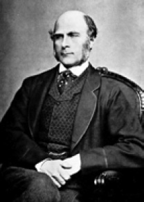
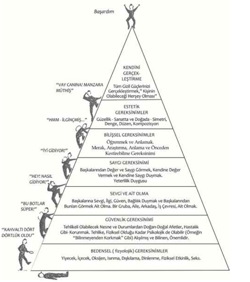
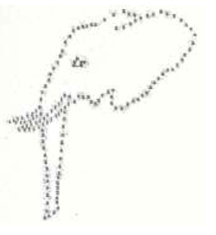
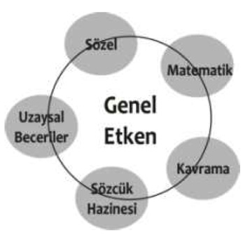
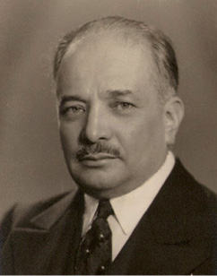
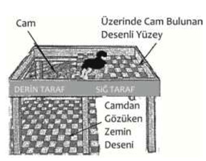
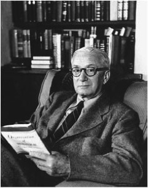

G
gaipten haber alma (clairsentience) Görme ya da işitme organları dışındaki becerilerle bilgi edinmek için kullanılan bir parapsikoloji terimi.
gaipten haber verme (clairvoyance) Normal olarak duyu organlarıyla görülemeyen geçmişteki, şimdiki ya da gelecekteki olayların algılandığını (duyu ötesi algıyı) anlatan bir parapsikoloji terimi.
Galen’ın huy sınıflaması (Galen’s classification of temperament) İ. S. 2. yüzyılda yaşayan Galen, insanları tiplere ayırma konusunda yaşadığı çağa göre önemli sayılan dört farklı huy (mizaç) tanımlamıştır. Dayanağı, bedenin humeurslarıdır (hıltlarıdır. Günümüzdeki beden ve kan kimyasına dayanan yeni görüşlerin oluşmasına temellik eden ve dört temel huy sınıflaması şöyledir:: (1) Canlı huylular (sanguinler, demeviler): Kırmızı kanın başat olması nedeniyle bu tipler canlı, devingen ve iyimser bir görünüm sergiliyolar. (2) Ağırkanlılar (phelegmatics, lenfailer) Bunlar akkan (lenf) başatlığı nedeniyle ağırcanlı, soğuk, kolaylıkla duygulanamayan tiplerdir. (3) Karaduygulular (melankolikler): Bu tiplerin kanlarında kara safra başattır. Bu nedenle bunların ayırt edici özellikleri çekingenlik, durgunluk, kötümserlik ve kendi halindeliktir. (4) Öfkeliler (koleriklşer, safraviler) Kanlarındaki yeşil safranın başatlığı sonucunda ortaya çıkan öfkeliler duyarlı, öfkeli ve coşkuludurlar. Bkz. tipoloji.
GALTON, Sir Francis (1822-1911) İngiliz bilim adamı. İki buçuk yaşında okumayı öğrendiği söylenen Galton, başladığı okulları yarıda bıraktı. Sonunda kuzeni Darwin gibi Cambridge’e gitti. Birçok alanla ilgilendi ve bu alanlarda bilime katkı yaptı. Coğrafya, meteoroloji, insanbilim, kalıtım, bireysel ayrılıklar, matemamatik, istatistiksel analiz, sözcük çağrışım testleri bunlar arasında yer alıyor. Parmak izini de o keşfetti. Galton’un asıl çıkış noktası, dahiliğin kalıtsal olduğunu, ırkların iyileştirilebileceğini kanıtlamaktı. O, zekâ ile bedensel özellikler arasında da bir ilişkinin varlığına inanıyordu. Bu amaçla zekâ, tepki süresi, görüş keskinliği, duyuları ayırt etme yetisi, sözcük çağrışımları, işitme keskinliği, kavrama gibi konularda birçok deney yaptı. Bu deney ve araştırmaların, bugünkü psikometriye önemli katkıları oldu. Ojenik denilen bilimi de o kurdu. Servetinin bir bölümünü, bu alanda çalışan derneğe bıraktı. Kurduğu laboratuvarı ve yaptığı çalışmalarla psikoloji alanında önemli ağırlıkları olan Edward Thorndike, James MeKeen, Cattell gibi kişileri kamçıladı. Örneğin, Cattell ilk zekâ testlerini önemli ölçüde Galton’un çalışmalarına dayanarak geliştirmiştir. Başlıca yapıtları: Tropical South Africa (1853), The Art Of Travel (1853), Hereditary Genius (1969), English Men Of Science: Their Nature and Nature (1874), Psychometric Experiments (1879), İnquiries into Human Faculty and Its Developmant (1883), Natural Inheritance (1889). Bkz. çağrışım Testi; regresyon; sözcük çağrışımı.

galvanik deri tepkisi (galvanic skin response) Cildin; özellikle avuç içinin ve öbür kılsız bölgelerin uyarıcıya tepki olarak elektrik direncinin değişmesi. Özerk sinir sisteminin kendiliğinden bir tepkisi olarak bu durumun gözlemlenmesi, ter bezlerinin etkinliğine bağlı bulunuyor; hem haz veren hem de stres yaratan uyarıcılarla; dahası yeni ya da koşullu uyarıcılarla ortaya çıkabiliyor. Bkz. yalan makinesi.
gama alkolizm (gamma alcoholism) E. M. Jellinek’in alkol kullanımı sınıflamasında alkole karşı ruhsal ve fizyolojik bağımlılık geliştiren ve alkol alımını denetleme gücünü yitiren kişiler için kullandığı terim. Bu alkol kullanma düzeyi, ruhsal bağımlılıktan fizyolojik bağımlılığa doğru bir ilerleme olup davranışlarda belirgin bir kötüleşmeye yol açıyor. Bkz. alkolizm.
gamet Bkz. eşeylik hücresi.
gangliyon (ganglion) Beynin ve omuriliğin dışında kalan ve periferik sinir sisteminin bir parçası olan sinir hücreleri. Bu hücreler, duyusal ve özerk sistemlerde bilgi işleme işlevi görüyorlar.
gaye Bkz. amaç, hedef, erek.
Gazi Eğitim Enstitüsü (GEE) (Gazi Pedagogical Institute) Orta dereceli okullara öğretmen yetiştirmek amacıyla 1926-1927 öğretim yılında Konya’da Orta Muallim Mektebi adı ile kurulup bir yıl sonra Ankara’ya taşınan ve 1929-1930 öğretim yılında Gazi Orta Muallim Mektebi ve Terbiye Enstitüsü adı ile tarihsel binasına yerleşen Milli Eğitim Bakanlığı’na bağlı bir yüksek öğretim kurumu. Kuruluşunda yalnızca edebiyat bölümü bulunan; Ankara’ya taşındığında pedagoji bölümü de eklenen 1928-1929 öğretim yılında İlköğretmen okulu çıkışlıları sınavla alan iki yıllık bir hazırlık bölümü ile bir buçuk yıllık bir meslek bölümünden oluşan enstitüde edebiyat ve pedagoji bölümlerinin yanı sıra tarih, coğrafya, fizik ve tabiat bilimleri ile matematik bölümleri de vardı. 1932-1933 öğretim yılında bu beş bölümün öğrenim süresi dört yıla çıkarıldı ve bunlara ayrıca üçer yıllık resim-iş, beden eğitimi bölümleri eklendi. 1934-1935 öğretim yılında hazırlık sınıfları kaldırıldı; 1937-1938 öğretim yılında müzik; 1941-1942 öğretim yılında iki yıllık Fransızca; 1944-1945 öğretim yılında da İngilizce bölümleri açıldı. Böylelikle bu eski ve köklü kurumun Almanca, Fransızca, İngilizce, beden eğitimi, resim-iş, müzik, sosyal bilgiler, matematik, tabiat bilimleri, Türkçe bölümleri, ilköğretmen okulu ve lise çıkışlıları sınavla parasız yatılı öğrenci olarak almış ve iki üç yıllık bir öğretimden sonra orta dereceli okullara dal öğretmeni; pedagoji bölümü de ilköğretmen okulu çıkışlıları, ilköğretmen okullarına meslek dersleri öğretmeni ve ilköğretim müfettişi olarak yetiştirmiştir. Cumhuriyetin ilk yıllarında eğitimin yurt düzeyinde yayılıp gelişmesinde önemli bir görev yapmış olan bu kurumu bitirenler, Milli Eğitim Bakanlığı’nın merkez ve taşra örgütlerinde de önemli görev ve sorumluluklar üstlenmişlerdir. Daha sonra enstitü, tümüyle Gazi Üniversitesi içinde yer almıştır.
gebeliğin önlenmesi (contraception) Tohumun yumurtayı aşılamasını yapay olarak önleme yoluyla isteyerek döl yetiştirmeyi sınırlama. Bir tür doğum kontrolü olan bu sınırlama, çocuk düşürme ile karıştırılmamalıdır. Bu terim, kısırlaştırma dışında, gebelikle sonuçlanan bütün birleşmelere karşı alınan önlemleri kapsıyor.
gebelik (pregnancy) 1. Dişi omurgalılarda aşılanmış yumurtanın döl yatağında gelişmesi sırasındaki koşullar. 2. Doğuncaya kadar yavrunun anne karnında geçen süresi; hamilelik. Bu süre, insanda dokuz ay ya da kırk hafta kadardır.
gece karabasanı Bkz. korku.
gece korkusu Bkz. korku.
gece yatağını ıslatma Bkz. yatağa işeme; psikoterapi.
gecikmeli bellek (delayed memory) Kişinin daha önce anımsamadığı bir anıyı anımsaması. Bu anımsama, kendiliğinden ya da çağrışımla oluyor.
gecikmeli boşalma (delayed ejaculation) Cinsel ilişki sırasında erkeğin boşalmakta zorluk çekmesi biçiminde beliren cinsel işlev bozukluğu.
gecikmeli koşullama (delayconditioning) Pavlov benzeri koşullamada bir sinyalin kısa bir gecikmeden sonra, biyolojik açıdan önemli bir olayla birlikte verilmesi. Bkz. izli koşullama.
geciktirme sağaltımı Bkz. geciktirme tedavisi.
geciktirme tedavisi (delay therapy) Obsesif kompulsif hastaların tedavisinde kullanılan bir yöntem; geciktirme terapisi, tepki engelleme tedavisi, geciktirme sağaltımı. Bu tedavide hastalar, normal koşullarda el yıkama gibi kompulsif davranışlarını kışkırtacak ortamlara sokuluyor; ancak söz konusu davranışları yapmaları engelleniyor.
geciktirme terapisi Bkz. geciktirme tedavisi.
geçerlik (validity) Ölçme aracının ölçmeyi amaçladığı özelliği, başka özelliklerle karıştırmadan, doğru biçimde ölçme derecesi. Örneğin, uzunluk ölçmek için geliştirilmiş olan metre ile ağırlık ölçülemez. Metrenin amacı, uzunluk ölçmektir. Bir ölçme aracının geçerliği, mantıksal ve görgül yollarla belirleniyor. Alanın uzmanı, araştırma yapmadan da testin içermesi gerekenlerle testi karşılaştırabiliyor. Bu amaçla birden çok yargıcı seçiliyor ve onların ortalamaları alınıyor. Görgül yolla araştırma yaparak geçerliğin saptanması, daha olumlu sonuç veriyor. Kullanım amacına göre, bir ölçme aracında bulunması gereken üç tür geçerlik şunlardır: (1) Kapsam geçerliği: Bu geçerlik, bir ölçme aracının, ilgilenilen davranış alanına giren davranışları ne aşamada içerdiğini belirtiyor. Bilgi ve başarı testlerinde daha çok, kapsam geçerliği aranıyor. Kapsam geçerliği için genellikle test maddelerine bakılarak karar veriliyor. Maddelerin, ilgilenilen davranış evrenini en iyi biçimde örneklemesi bekleniyor. Bunun sağlanması için belirtke tablosu hazırlanıyor. Belirtke tablosunda, özenli bir çalışma ile ölçülmek istenen hedef davranışın ana konuları belirleniyor. Bu geçerlik, daha çok, mantıksal yolla ortaya konuluyor. (2) Ölçüt bağıntılı geçerlik: Bu geçerliğin sağlanması için, söz konusu davranış ya da özelliğin ölçütü olarak kabul edilen değişkenle test karşılaştırılıyor. Bir testin, ölçüt olarak alınan başka bir testle tutarlılığına bakılıyor. Zekâ ve akademik yeterlilik testleri ve ilgi testleri için genellikle ölçüt bağıntılı geçerlik kullanılıyor. Ölçme, gelecekteki başka bir alana ve zamana yönelik bir kestirimde bulunmak için yapılıyorsa o zaman, yordama geçerliğine bakılması gerekiyor. Ölçme, şimdiki döneme yönelikse, hem-zaman geçerliğine bakılıyor. Bunda, ölçme de ölçütle ilgili sonuçlar da bir arada değerlendiriliyor ya da ölçme işlemi sırasında, hazır olan ölçüte bakılıyor. Örneğin, üniversite sınavındaki başarıyla lise son sınıftaki başarı karşılaştırılıyor. Yordama geçerliğinde istatistiksel teknik olarak, gerileme (regression) kullanılıyor. Üniversite giriş sınavlarında karşılaşılan durum, ölçme aracıyla elde edilen sonuçla bireylerin geleceğinin yordanmasıdır. İyi puan alan öğrencinin, üniversitede başarılı olacağı yordanıyor. Bu nedenle ölçme aracıyla elde edilen sonuç, sonradan elde edilen ve ölçüt olarak kabul edilen bir sonuçla karşılaştırılarak bulunan korelasyon katsayısı, o testin yordama geçerliğini vermiş oluyor. Ancak, ölçütte uygunluk, yansızlık, güvenirlik ve kolay elde edilebilirlik özelliklerinin aranması gerekiyor. (3) Yapı geçerliği: Bu geçerliğin amacı, ölçme aracının hangi davranışı, hangi özellikleri ve nitelikleri ölçtüğünü; bunların ölçülmesinde testteki kavram ve yapımların etkililik derecesinin ne olduğunu ortaya çıkarmaktır. Yapı geçerliliğinin belirlenmesi, bir tür, kuramın denetlenmesi; kuram geliştirmek demektir. O nedenle, kurama ilişkin hangi denencelerin (hipotezlerin) kurulacağına karar veriliyor ve bu denenceleri test etmek için veri toplanıyor. Sonuçta da kuramın toplanan verileri açıklamak için yeterli olup olmadığı yordanıyor. Veriler kuramla çeliştiğinde, ya testin yorumlanma biçiminin değiştirilmesi ya kuramın yeniden düzenlenmesi ya da tümden reddedilmesi gerekiyor. Görgül yolla yapılmakta olan yapı geçerliği işlemi, uygun bir ölçüt bulunamadığı ya da tek bir ölçütün uygulanamayacağı durumda, uygun bir teknik olarak görülüyor. Ancak, bir testle ilgili ölçüt bağıntılı geçerlik bilgisi yoksa o test, yalnızca deneysel kabul ediliyor. Yapı geçerliği; sorular, grup farkları ve başka değişkenlerin test üzerindeki etkisi araştırılıp testle öbür testler arasındaki korelasyonlara ve iç korelasyonlara bakılarak ve faktör analizi yapılarak belirleniyor. Bir testi daha da kullanışlı yapmak için, o testin geçerliğine ilişkin, her üç geçerlikle ilgili bilgi toplanmalıdır. “Ölçme aracıyla ölçüt arasındaki korelasyon” demek olan geçerlik katsayısı yüksek olmalıdır. Bkz. güvenirlik.
geçerlik katsayısı (validity coefficient) Belli bir testten elde edilen puanlarla bu testin ölçtüğü varsayılan özellikleri ölçen ölçüt puanlar denilen bağımsız bir ölçüm arasındaki korelasyon. Örneğin, akademik başarı profilini belirlemek için uygulanan bir testle, öğrencinin o güne kadarki akademik performansını gösteren not ortalamaları arasındaki korelasyon, sözü edilen testin geçerliği konusunda bir fikir verebiliyor.
geçici bastırma Bkz. bastırma.
geçicilik (transience) Psikiyatride, yitirme beklentisiyle birleşen bir duygu. Her şeyin geçici olduğu duygusu. Freud’a göre, bu duygu zevk almayı engelleyen; derin, kalıcı ilişkiler kurmayı köstekleyen bir duygudur. Normal kişi ise, “burada”yı ve “şu an”ı yaşıyor; sevgi nesnelerinin yitirilmesi düşüncesinden ürkmüyor.
geçimsizlik Bkz. boşanma.
geçiş 1. (transfer) Daha önce gerçekleştirilmiş etkinliklerin ve edinilmiş olan davranışların yeni öğrenilenler üzerindeki etkisi; bir alanın ya da öğrenilenin başka alana ya da konuya da aktarılması; transfer, aktarım. geçişim. Örneğin, ikinci bir yabancı dil öğrenme, birinciden çok kolay oluyor. Bu etki, öğrenilen konunun, daha önce öğrenilen konuya benzemesi ya da benzememesine; araya giren zamana ve başka etkenlere göre kolaylaştırıcı, pekiştirici ya da zorlaştırıcı, köstekleyici olabiliyor. Genellikle olumlu ve olumsuz olarak iki türlü geçiş bulunuyor. Bir alanda öğrenilenler, başka bir alanda öğrenilenleri kolaylaştırıyorsa buna olumlu geçiş deniyor. Belli bir tür arabayı sürmeyi öğrenen kişinin, başka tür bir arabayı da kullanabilmesi, olumlu geçişi örneklendiriyor. Bu örnekte yüzde yüze yakın bir geçiş söz konusudur. Bir alanda ya da konuda öğrenilenler, başka bir alanda ya da konuda öğrenileceklere engel oluyorsa, buna da olumsuz geçiş deniyor. Aynada görüleni çizme deneyi, olumsuz geçişe örnek oluşturuyor. Ayna, sağ ve solu ters gösterdiği için görüntünün resmini çizmek güçleşiyor. Bunda, daha önce öğrenilmiş olan göz-el eşgüdümü yerine yenisini geliştirmek gerekiyor. Bkz. aktarım; bilişsel öğrenme; geçme.
geçme Bkz. geçiş.
geçmişe dönüş (flashback) 1. Geçmişe dönüş halüsinozu. Görsel, işitsel, davranışsal ya da duygusal olabilen geçmişe dönüşleri oluşturan dört genel grup şunlardır: a. Rüyalar ya da karabasanlar. b Kişinin uyandığı halde rüya içeriğinin etkisinde kaldyeığı, gerçeklikle ilişki kurmada zorlandığı rüyalar. c Kişinin gerçeklikle ilişkisini koruduğu ya da yitirdiği birden çok duyuyu içeren halusinasyonlar eşliğinde gelişen bilinçli geçmişe dönüşler. ç. Kişinin geçmişe dönüş ile geçmişte kalan travma arasındaki ilişkiyi o anda ya da daha sonra göremediği bilinçsiz geçmişe dönüşler. 2. Akut travma yaşayanlarda sıklıkla rastlanan bir tür kendiliğinden duygusal boşalım. Kişi, kimi olaylarda birkaç saniyeden birkaç saate; hatta birkaç güne dek değişen sürelerle çözülmeli durumlar yaşıyor. Bu süre içinde, travmatik olayın bileşenleri canlanıyor ve kişi, olayı sanki şu anda yaşıyormuş gibi davranıyor. Bkz. travma sonrası stres bozukluğu; yeniden canlandırma.
geleceğe yönelik amaçlar Bkz. amaç; bireysel psikoloji.
gelecek kaygısı (future shock) Alvin Tofler’e göre, çok hızlı teknolojik ve toplumsal değişimler karşısında duyumsanan kişisel kafa karışıklığı, toplumsal yönelimsizlik.
gelecekteki olası eğitim sistemleri (possible educational systems in the future) Bkz. biyoteknolojik kuram (biyoteknolojik eğitimin temelleri); dizgeli (programlandırılmış) bilgisayarlı eğitim; dizgeli (programlandırılmış) eğitim; robotlarla eğitim.
gelenek (tradition) Eski çağlardan beri kuşaktan kuşağa geçerek yaşanagelen ve toplumun, topluluğun üyeleri arasında ortak bir ruh ve sağlam bir bağ yaratan her türlü değerli alışkanlıklar, kültürel kalıntılar, bilgi, töre ve davranışlar; anane.
geleneksel (traditional) Gelenekle ilgili, geleneğe dayanan, gelen niteliğinde olan; ananevi. Bkz. evlilik (Geleneksel Evlilik); geleneksel dilbilgisi; geleneksel düzey; geleneksel eğitim; geleneksel toplum.
geleneksel dilbilgisi Bkz. dilbilgisi
geleneksel düzey Bkz. KOHLBERG, Lawrence.
geleneksel eğitim Bkz. eğitim.
geleneksel evlilik Bkz. evlilik.
geleneksellik öncesi düzey Bkz. KOHLBERG, Lawrence.
geleneksellik sonrası düzey Bkz. KOHLBERG, Lawrence
geleneksel okul (traditional school) Geleneksel eğitimin uygulandığı eğitim kurumu. Bkz. eğitim.
geleneksel sözel tedaviler Bkz. psikoterapi.
geleneksel toplum (traditional society) Çağcıl üretim araçları ve kurumlarının bulunmadığı, üretümü tarıma dayalı toplum. Bkz. çağcıl toplum.
gelişim (development) 1. Kristallerdeki molekül değişmelerinden toplumsal değişmelere dek canlı ve cansız varlıklarla birey ve toplumdaki her türlü değişim ve ilerlemeler ve bunların sonuçları. 2. Biyolojide: Bir yandan canlının birey olarak yumurtanın döllenmesinden erginleşene dek süren yapısal ve işlevsel değişiklikler dizisi (birey oluş); öbür yandan da türün başlangıcından bugüne dek süren gelişim ve ilerleme aşamaları (tür oluş). 3. Eğitim ve psikolojide: Bireyin doğuştan getirdiği özelliklerinin özellikle erginlik çağına dek gösterdiği ilerleme ve değişmeler. Gelişim, her canlıda kendine özgü bir çizgi izliyor. Bu çizgide inişler, duraklamalar, sıçramalar oluyor; ama aynı türde ya da aynı yaş dilimlerinde ortak birçok benzerlikler görülüyor. Eğitim ve psikolojide gelişim, daha çok niteliksel ya da işlevsel değişimler ve yapıda, işlevde, örgütte ayrımlaşma, bütünleşme, karmaşıklaşma ya da verimleşmede ileriye doğru ya da üst düzeyde bir değişme. 4. Toplumbilimde: Bireyin toplumsallaşması ve bir kültür grubunun üyelerin gereksinimlerini daha iyi giderecek yönde ilerlemesi. Bkz. gelişim aşamaları; gelişim bunalımı; gelişim dönemleri; gelişim dönemlerinde cinselliğin ortaya çıkış biçimi; gelişim evreleri; gelişim gereksinimleri; gelişimin genel ilkeleri; gelişim ödevleri; gelişim ölçekleri; gelişim psikolojisi; gelişimsel aritmetik bozukluğu; gelişimsel dil bozukluğu; gelişimsel engeller; gelişimsel gecikme; gelişimsel kilometre taşları; gelişimsel okuma bozukluğu; gelişimsel rehberlik; gelişimsel söyleyiş bozukluğu; gelişim sıralaması; gelişim testleri; gelişim yaşı; gelişmemiş benlik; geliştirici (eğitici) ceza; geliştirici eğitim.
gelişim aşamaları Bkz. gelişim dönemleri, gelişim evreleri.
gelişim bunalımı (developmental anxiety) Erikson’a göre, sekiz gelişim döneminden birine ilişkin özelliklerin ortaya çıkışı, belirli bir aşamaya gelişi ve o gelişim döneminin aşılması çabaları. Bu bunalımlar, gelişimin doğal zorluklarıdır. Bkz. insanın sekiz çağı.
gelişim dönemleri (stages of development) 1. Çözümleme ve karşılaştırma amacıyla yaşamın belli ortak özelliklere ve takvim aralıklarına göre bölümlendiği dönemler; gelişim çağları, gelişim basamakları, gelişim evreleri; gelişim aşamaları, gelişim düzeyleri. Gözleme ve geleneklere dayanılarak halk dilinde bu dönemler süt çocuğu, kundak çocuğu, kucak çocuğu, yuva çocuğu, okul öncesi çocuğu, okul çocuğu, ya da çocukluk, gençlik, yetişkinlik ve yaşlılık olarak adlandırılıyor. Bu bölümlemelerin, belli bir gelişim kuramını desteklemek gibi bir amacı yoktur. Bu nedenle bunlar, genellikle yapay ve bilimsellikten uzaktır. 2. Kolaylık sağlamak amacıyla, yetkililerce yapılan bölümlemeler. Bu konuda farklı dilimlemeler yapılmıştır. Amerika Psikologlar Derneği (APA) Gelişim Psikolojisi Bölümü’nün benimsediği gelişim dönemleri şöyledir: (1) Süt çocukluğu (bebeklik) çağı (infanty): Doğuştan 1 yaşa kadarki dönem. Bu dönem, kendi içinde (a) Bebek (neonate) (İkinci haftaya kadar); (b) Süt çocuğu (baby) (9 aylığa kadar) olarak iki alt döneme ayrılıyor. (2) Çocukluk çağı (childhood): 1-12 yaşlar arası dönem. Bu dönem kendi içinde (a) İlk çocukluk çağı (early childhood) (1-6 yaşlar arası dönem); (b) Orta çocukluk çağı (mid-childhood) (6-10 yaşlar arası dönem); (c) Son çocukluk çağı (late-childhood) (10-12 yaşlar arası dönem) olarak üç alt döneme ayrılıyor. Bu çağın ikinci ve üçüncü alt bölümlerine okul çağı ya da çoğunlukla yeniyetmelik öncesi ya da ergenlik öncesi çağı deniyor. (3) Gençlik (yeniyetmelik ya da ergenlik) çağı (adolescence): 12-21 yaşlar arası dönem. Bu dönem de kendi içinde (a) İlk gençlik çağı (early adoloscence) (12-14 yaşlar arası dönem) (b) Orta gençlik çağı (puberty) (14-16 yaşları arası dönem) (c) Son gençlik çağı (late-adolescence) (16-21 yaşlar arası dönem) olarak üç alt döneme ayrılıyor. (4) Olgunluk (yetişkinlik) çağı (adult): 21-26 yaşlar arası dönem. (5) Orta yaşlılık çağı (middle old age): 26-65 yaşlar arası dönem. (6) Yaşlılık çağı (old age): 65 ve daha yukarı yaşlar. Bkz. çocuk ve ergenin gelişim dönemleri; içgüdü kuramı; insanın sekiz çağı.
gelişim dönemlerinde cinselliğin ortaya çıkış biçimi Bkz. ruhsal-cinsel gelişim.
gelişim evreleri (developmental stages) Freud’un ruhsal-cinsel gelişim kuramı; Erikson’un insanın sekiz çağı; Piaget ve Kohlberg’in ahlak gelişimine ilişkin görüşleri gibi yaklaşımlarda insanın temel özelliklerinin ya da davranış yapılarının, gelişim süreci içinde nasıl ortaya çıktığını açıklayan dönemler. Bkz. çocuk ve ergenin gelişim dönemleri; çocuk ve ergende ruhsal-cinsel gelişim; gelişim dönemleri.
gelişimin genel ilkeleri Bkz. gelişim ödevleri.
gelişim gereksinimleri Bkz. eğitim; gereksinimler aşama sırası; üst gereksinimler.
gelişim ödevleri (developmental tasks) Gelişim dönemlerinin her birinde kişinin mutlu olması, ileride karşılaşacağı görevleri de başarıyla yerine getirmesi için kazanması gereken bedensel, devimsel, zihinsel, toplumsal, duygusal ve cinsel davranış biçimleri (beceriler), alışkanlıklar ve değer duyguları. Gelişim ödevleri, aşağıdaki gelişim ilkelerine uygun olarak yerine getiriliyor. Gelişimin genel ilkeleri: (1) Çocuk gelişimi, kalıtım ve çevre koşullarının katkısıyla gerçekleşiyor. (2) Çocuk gelişimi belli bir sıra izliyor. Örneğin, her çocukta önce büyük kas gelişimi gerçekleşiyor. Bununla birlikte, çocukların gelişim hızlarında bireysel ayrılıklar görülüyor. (3) Çocuk gelişiminin aşamaları baştan ayağa, içten dışa, basitten zor ve karmaşık olana doğru bir gidiş gösteriyor. Örneğin, dil gelişiminde çocuk önce anlamsız sesler çıkarıyor; sonra belirgin heceleri söylüyor; daha sonra da anlamlı sözcükler ve tümceler oluşturuyor. (4) Çocuğun her gelişim alanı, öbür gelişim alanlarıyla etkileşiyor. (5) Gelişim, her yaşta aynı hızda sürmüyor; yaşlar arasında hız ayrılıkları görülüyor. Örneğin, bedensel gelişim ilk iki yılda çok hızlı olmasına karşılık, bunu izleyen yıllarda hız azalıyor; erinlikten sonra yeniden artıyor. Gelişim, aynı yaştaki kişiler arasında da farklılk gösteriyor. (6) Çocuğun belirli dönemlerde belirli gelişim düzeyine ulaşması gerekiyor. Tersine, bir sonraki gelişiminde aksamalar oluyor. Örneğin, çocuk, özgüven duygusunun temelini, yaşamının ilk yılında atmış olması gerekiyor. Bu gerçekleştirilemezse, sonraki yaşlarda sağlıklı bir benlik yapısı oluşturmak güçleşiyor. Bkz. gelişim sıralaması; ruhsal-cinsel gelişim kuramı; insanın sekiz çağı; çocuk ve ergenin gelişim dönemleri; çocuk ve ergende ruhsal-cinsel gelişim.
gelişim ölçekleri Bkz. gelişim testleri.
gelişim psikolojisi (developmental psychology) İnsan davranışının ve zihin süreçlerinin bilimi olan psikolojinin alt ve temel uzmanlık dallarından biri; gelişim ruhbilimi. Gelişim psikolojisi araştırmaları, başlıca iki bölümde toplanıyor. Bunlardan birincisinde, insan gelişiminin çeşitli yönleri ele alınıyor ve betimleniyor. İkincisinde ise gelişime ilişkin temel kavramlar, ilkeler, kuramlar ortaya konuluyor. Gelişim alanındaki en yararlı çalışmalar, olgu ile kuramı birleştiren ve bu yolla insan bilimlerine katkı sağlayan çalışmalardır.İnsan gelişimine ilişkin çalışmalar, bu bakımdan biyoloji, sosyoloji, antropoloji, tarih gibi bilim dallarını da ilginendiren çok disiplinli, bir alana yayılıyor. Onun için günümüzde bu dal, çok yönlü bir araştırma ve inceleme alanı yapılmalıdır. Gelişim psikolojisinin uğraşı alanı, bireylerin yaşamları boyunca geçirdikleri değişimleri betimlemek, açıklamak; bireyler arasındaki değişim, benzerlik ve farklılıkları ortaya koymaktır. Gelişim psikologları, gelişimi betimliyor; dolayısıyla gelişim normlarıyla ilgileniyorlar. Aynı zamanda gelişimin neden belli bir yolda ilerlediğini ve bireylerin gelişimlerinin neden birbirlerinden farklılaştığını bulmaya çalışıyorlar. Modern gelişim psikolojisi ise oldukça yenidir. 1960’lara dek bebek, çocuk ve ergen üzerindeki psikolojik araştırmalar, çocuk psikolojisi olarak biliniyordu. Günümüzdeki psikolojik gelişim anlayışı, son on yıllarda ortaya çıktı. Bütünleşmiş gelişim anlayışı, 1950’lerden sonra, değişimleri betimlemenin yerini değişimlerin açıklanmasının almasıyla başladı. Psikologlar, ilgilerini süreçlere yönelttiler. Bir yeni yönelim de yaşam boyu gelişim psikolojisidir. Bu yönelimin dayandığı iki temel sayıtlıdan biri, gelişimin, döllenme ile başlayan ve ölüm ile sonlanan yaşam boyu bir süreç oluşudur. Bu bakış açısı, bedensel büyümeye bağlı yaş dönemlerini kendi araştırma alanları sayan psikologların görüşlerinden ayrılmaktadır. Temel sayıltının ikincisi, gelişimin, büyümenin sonlanması ya da olgunlaşma ile sona ermemesidir. Yaşam boyu gelişim psikologları, tam tersine gelişime temel oluşturan yetişkinlik ve yaşlılık yıllarıyla daha çok ilgilenmaya başlamışlardır. Bu yaklaşımda ele alınan temel konular, gelişim sırasında beliren değişimlerin doğası; bu değişimleri hangi etkenlerin ortaya çıkardığıdır. Yaşam boyu gelişim psikolojisinde, yaşam akışı sırasında davranışta beliren sabitlik ve değişim araştırılıyor. Yaşam boyu gelişim psikolojisinin amacı, yaşam boyu gelişimin genel ilkelerine, gelişimde bireyler arası farklılıklara ve benzerliklere, gelişimde bireysel esnekliğin ya da değişebilirliğin derecesine ve koşullarına ilişkin bilgi edinmektir. Altmışlı yıllarda yaşlılığa ilişkin sorular, çok kolay yanıtlanabiliyordu. Çünkü gelişim, gençlikle özdeş tutuluyordu. Oysa araştırmalar, olgunlaşmadan sonraki bütün değişimlerin bozulma ya da düşüş oluşturmadığını; örneğin, zekânın kimi yönlerinde ilerlemelerin, yaşamın ikinci yarısında da sürdüğünü gösteriyor. Farklı sistemler, farklı oranlarda yaşlanıyor ve gelişimin yönü değişebiliyor. Hangi işlevin araştırıldığına bağlı olarak yaşlanma, kararlılık, artma ya da azalma içeriyor. Bu ve benzeri bulgular karşısında araştırmacılar, sayıtlılarını yeniden gözden geçirmek gereğini duymuşlardır. Böylece gelişim, döllenmeden ölüme dek bedende ya da davranışta ortaya çıkan yaşa bağlı değişimler olarak tanımlanmıştır. Bkz. çocuk ve ergenin gelişim dönemleri; çocuk ve ergende ruhsal-cinsel gelişim; davranış bilimleri; eğitim psikolojisi; insanın sekiz çağı; yetişkin psikolojisi.
gelişim ruhbilimi Bkz. gelişim psikolojisi.
gelişimsel aritmetik bozukluğu (developmental arithmetic disorder) Kronolojik yaştan, zekâ geriliğinden, yetersiz eğitimden kaynaklanmayan aritmetik beceri yetersizlikleri. Bu tanı, bireysel zekâ testleri ve akademik başarı testleri ile belirleniyor.,
gelişimsel dil bozukluğu (developmental language disorder) Gerekli dil becerilerinin çocukluk döneminde yeterince kazanılmamış olduğunu dile getiren ve biri anlatım; öbürü ise alma (anlama) olarak iki yönden değerlendirilen dil sorunları için kullanılan bir tanı biçimi. Sinirsel ya da anatomik kusurlardan kaynaklanmayıp tümüyle gelişimsel olan bu bozuklukların ilkinde çocuk, dili normal düzeyde anlayabilmesine karşın, sözel anlatım yetisini geliştiremiyor. İkincisinde ise hem dili anlama ve algılamada hem de anlatımda sorunlar yaşıyor. Bkz. dil bozuklukları; disfazi; söz yitimi.
gelişimsel engeller (developmental disability) Zekâ geriliği, beyin felci, sara ya da nörolojik sorunlara bağlı olarak 18 yaşından; kimi değerlendirmelere göre de 22 yaşından önce ortaya çıkıp yaşam boyu sürmesi beklenebilen ve kişinin yaşamında belirgin zorluklara yol açan özürler ya da yetersizlikler. Körlük, sağırlık, dilsizlik ve otizm de gelişimsel engellerdir. Bir çocuğun engelli olarak değerlendirilmesi için engelin, kendi kendine bakma, konuşulanı anlama ve kendini anlatma, öğrenme, devinme, bağımsız yaşayabilme, yön bulma, ekonomik yetersizlik gibi temel yaşam etkinliklerinden en az üçünde belirgin işlevsel kısıtlamanın görülmesi gerekiyor.
gelişimsel gecikme (developmental delay) Çocuğun kendi yaş grubundan beklenen düzey ve oranda büyümemesi durumu. Söz konusu gecikme, tek bir alanda da birkaç alanda da olabiliyor. Bellek, davranışlarını denetleme, kurallara uyma, sorun çözme gibi bilişsel gelişim; oturma, emekleme, ayakta durma, yürüme, koşma, el eşgüdümü gibi devimsel gelişim; dili anlama, sesleri doğru çıkararak anlatma gibi dil ve konuşma gelişimi; beslenme, tuvalet eğitimi, akranlarıyla oynama gibi toplumsal gelişim ve kendini yönetme, bu alanların başlıcalarıdır. Bu gecikmelere sinirsel, fizyolojik nedenlerin yanı sıra, çevresel etkenler de yol açabiliyor.
gelişimsel kilometre taşları (developmental milestones) Çocuğun yürümesi, ilk sözleri, kendi adını söylemesi, kendini beslemesi, cinsler arasındaki farkı keşfetmesi, ikincil cinsellik özelliklerinin gelişimi+, somut düşünceden soyut düşünceye geçişi gibi gelişim sürecinde önemli bir yer tutan dönüm noktaları.
gelişimsel okuma bozukluğu (developmental reading disorder) Okumada ve okumayı gerektiren okul çalışmalarında belirgin bir kötüleşme olarak ortaya çıkan dil bozukluğu. Bu bozukluk, kronolojik yaştan, zekâ geriliğinden ya da yetersiz eğitimden ileri gelmiyor; uygulanan testler, çocuğun bu alandaki ediminin (kişinin bu konuda yapabildiklerinin), zihinsel kapasitesinin çok altında olduğunu gösteriyor. Buna göre yapılması gereken şey, bu bozukluğun ortadan kaldırılması için çocuğa yardımcı olmaktır.
gelişimsel rehberlik (developmental guidance) Okuldaki eğitim sürecinin bireyselleştirilmesini ve insancıl kılınmasını sağlayan örgütlendirilmiş çabalar ve işlemler. Gelişimsel rehberlik, bireyin gizilgüçlerini en iyi biçimde ortaya çıkarıp kullanmasını ve benliğini güçlendirmesini sağlayacak bir çevrenin oluşturulmasını destekleyen ve bu yolla gelişimin doğal bir süreç olarak gerçekleşmesine yardımcı olan bir rehberlik anlayışıdır. Bkz. rehberlik ve psikolojik danışma.
gelişimsel söyleyiş bozukluğu (developmental articulation disorder) Ç, F, L, R, Ş, T, Z gibi geç kazanılan sesleri gerektiği gibi söyleyememe biçimindeki konuşma bozukluğu. Gelişimsel söyleyiş bozukluğu olan çocukta dilbilgisinin ve söz dağarcığının yeterince gelişmiş; zekâ gelişiminin normal olmasına karşın bebeksi konuşma sürüyor ve çocuk, belirtilen sesleri doğru söylemekte zorlanıyor. Yaş ilerledikçe kimi çocuklarda bu bozukluk bir ölçüde ya da tümüyle ortadan kaldırılabiliyor.
gelişim sıralaması (developmental sequence) Bir organizmanın gelişimi süresince geçirdiği yapısal ya da işlevsel değişimlerin sırası. Her canlı türünün kendine özgü bir gelişim sıralaması vardır. Ancak, bunlardan her birinin başarıyla gelişimi için, bir öncekinin başarıyla tamamlanmış olması gerekiyor. Bu sıralama biyolojik, bilişsel, toplumsal ya da duygusal olabiliyor. Örneğin, Piaget’nin gelişim sıralaması bilişsel gelişim; Erikson’un belirlediği insanın sekiz çağı ise bir toplumsal-ruhsal gelişim sıralamasıdır. Bkz. ahlak gelişimi; bilişsel gelişim kuramı; ruhsal-cinsel gelişim kuramı.
gelişim testleri (developmental tests, developmental scales) Okul öncesi çocuklarla daha küçük çocukların gelişim durumlarını değerlendirmek için hazırlanan değişik testlerle ölçeklere verilen genel ad. Bu araçlar, doğal olarak tümü ile ya araç testleridir ya da sözlü ve bireyseldir. Bkz. psikolojik testler.
gelişim yaşı (developmental age) Çocuğun sözel beceri, sayısal beceri gibi belli gelişim alanlarında takvim yaşına oranla aldığı edimsel puanla belirlenen ve yaş birimiyle ya da yaş eşdeğeriyle anlatılan bir gelişim ölçüsü. Örneğin, sayısal puanı 10 yaş ortalamasına denk düşen 12 yaşındaki bir çocuğun sayısal gelişim yaşı, 10 olarak belirleniyor.
gelişmemiş benlik Bkz. yadsıma.
geliştirici (eğitici) ceza Bkz. ceza.
geliştirici eğitim Bkz. eğitim; eleyici eğitim.
gen (gene) Kalıtımın işlevsel birimi. DNA’nın (deoksiribo nükleik asit’in) kalıtsal işaretleyicilerinin özgün dizilimiyle belirlenen ve her biri belli bir kromozomun belli bir noktasında bulunan genler, türe ve bireye özgü özelliklerin tümünü içeriyor. Bkz. kromozom; RNA; tam donanımlı.
gençlik (youth) Cinsel kimlik oluşturup buna uygun davranış örüntülerinin geliştirildiği; kişilik bağımsızlığının kazanıldığı; yaşıtlarca benimsenen arkadaşlık, önderlik ve işbirliği yapma yeteneklerinin edinildiği yaklaşık 21-34 yaşları arasındaki evre. Kişi bu evrede bir mesleğe yönelmeyi başarıyor. Sorunları çözme, çatışan değerleri uzlaştırma yoluyla kendine bir yaşam felsefesi geliştiriyor. Benlik kimliğini belirliyor. Beden, yetişkin yapısına kavuşuyor. Cinsel, toplumsal-ruhsal olgunlaşma, tamamlanıyor. Ruhsal bağımsızlık istek ve çabası, güçlü bir biçimde öne çıkıyor. Bu özkimlik arayışı evresinde hayranlık ve tutkunluklar doruğa ulaşıyor. Soyut düşünme güçleniyor. Meslek seçiminin de gerçekleştiği bu evreden sonra kişi, iş yaşamına katılıyor ve kendine yeni bir ufuk açmış oluyor. Bkz. çocuk ve ergenin gelişim dönemleri; gençlik kültürü; insanın sekiz çağı.
gençlik dönemleri Bkz. çocuk ve ergenin gelişim dönemleri ( 4) Ergenlik ve Delikanlılık Dönemi); gençlik.
gençlik kültürü (youth culture) Gençlerin, ağırlıklı olarak eğlence, tüketim kalıpları ve boş zaman kullanımında kendisini duyumsatan; yoğun olarak medyanın etkisiyle biçimlenen; aile büyüklerinden çok arkadaş etkisiyle oluşan kültür özellikleri.
gençlik psikolojisi (youth or adolescence psychology) Gelişim psikolojisinin gençlik çağını konu alan bölümü ya da dalı; gençlik ruhbilimi. Bkz. insanın sekiz çağı
gençlik ruhbilimi Bkz. gençlik psikolojisi.
genç yetişkinlik dönemi Bkz. insanın sekiz çağı ((6) Yalnız Kalmaya Karşı Yakınlaşma Duygusunun Gelişimi).
genel adaptasyon sendromu Bkz. genel uyum sendromu.
genel bilişsel yeti Bkz. zekâ (Piaget’ye göre).
genel değerlendirme Bkz. tam öğrenme.
genel felç (general paralysis) Frengi virüsünün beyinde yol açtığı yıkım sonucu ortaya çıkan ağır bir beyin hastalığı; genel inme. Virüsün kuluçka dönemi uzun olduğundan ilk belirtiler, hastalığın bulaşmasından 5 ile 35 yıl sonra ortaya çıkıyor. Hastalığın belirtileri arasında yorgunluk, sinirlilik, zihin karışıklığı, unutkanlık, daha sonra baş ağrıları, boşluk doldurma yer alıyor. Bunların yanı sıra, akıl yürütme yetisi yitiriliyor; kuruntular başlıyor; kişi, nezaket ve ahlak kurallarına uymaktan vazgeçiyor. Hastalık ilerleyince anlamsız bir yüz anlatımı, hareket eşgüdümsüzlüğü, sarsak yürüyüş, daha sonra felç, çırpınmalar, idrar ve dışkı kaçırma gibi bedensel belirtiler baş gösteriyor. Hasta, tedavi edilmezse bitkisel yaşama giriyor.
genel inme Bkz genel felç
genelleme (generalization) 1. Belirli bir grup ya da sınıfın sınırlı bir parçasından edinilen yaşantılara dayanılarak grup ya da sınıfın tümü üzerine ileri sürülen yargı. 2. Davranışçı yaklaşımın öğrenme ilkelerinden biri. Öbür öğrenme ilkeleri ayırt etme, pekiştirme ve söndürmedir. Bkz. davranış değiştirme teknikleri.
genelleştirilmiş başkası Bkz. SULLİVAN, Harri Stack.
genelleştirilmiş kaygı bozukluğu Bkz. kaygı bozukluğu; yüzer gezer kaygı.
genelleştirme Bkz. zihinsel model.
genel psikoloji (general psychology) İnsan davranışlarının her aşamasını her görüş açısından inceleyen psikoloji dalı; genel ruhbilim. Genel psikoloji, belli çağlar, belirli uygulamalar ya da belli görüşlere yönelik gelişim ilkeleri yerine, temel ve evrensel ilkeleri ortaya koyuyor. Davranışın biyolojik temelleri, duyum ve algılama, öğrenme, bellek, bilişim, güdülenme, duygu ve heyecan, yaşam boyu gelişim, kişilik ve kişilik kuramları, genel psikolojinin ele aldığı başlıca konulardır. Bkz. davranış bilimleri.
genel ruhbilim Bkz. genel psikoloji.
genel uyarılmışlık düzeyi (arousal) Organizmanın fizyolojik ve ruhsal olarak tetikte olması durumu. Özerk sinir sisteminin sempatik işleviyle genel uyarılmışlık düzeyi (uyanıklık durumu, duygu ve heyecan durumu, fizyolojik olarak organizmanın harekete geçmeye hazır olması) arasında yakın bir ilişki vardır. Bu nedenle genel uyarılmışlık düzeyini denetleyen fizyolojik merkez, limbik sistem; özellikle hipotalamus ve RAStır. Genel uyarılmışlık düzeyi ile heyecan arasında şöyle bir etkileşim oluyor: Yoğun ve şiddetli heyecanlar genel uyarılmışlık düzeyini artırıyor; genel uyarılmışlık düzeyi de şiddetli heyecan duyulmasına yol açıyor. Bu nedenle şiddetli heyecan ya da genel uyarılmışlık düzeyinin yükselmesi durumunda kişi, uyumakta güçlük çekiyor. Kişinin genel uyarılmışlık düzeyi, sempatik sinir sisteminin etkili olduğu EEG, deri iletimi, gözbebeğindeki değişimler, kan basıncı, kalp atımı ve solunum sıklığı ölçülerek belirleniyor. Genel uyarılmışlık düzeyi ile kişinin öğrenmesi arasında ise ters “U” biçiminde bir ilişki bulunuyor. Uygun bir genel uyarılmışlık düzeyi öğrenmeyi artırırken, uyarılmışlık düzeyi yükseldiğinde, duyulan şiddetli heyecan ve kaygının etkisiyle, öğrenme hızı düşüyor. Öte yandan, genel uyarılmışlık düzeyi, kişiyi güdülüyor ya da kişinin güdülenmesi, genel uyarılmışlık düzeyini artırıyor. Özetle; organizma, herhangi bir yolla, örneğin stresle uyarıldığında, gerekli fizyolojik mekanizmalar harekete geçiyor ve organizmayı tepki yapmaya hazır duruma getiriyor.
genel uyum sendromu (general adaptation syndrome) H. Seşli’nin geliştirdiği ve organizmanın uzun süre etkisinde kaldığı yoğun strese uyum sağlamak üzere, stresle baş etmeye yönelik bütün kaynaklarını ve savunma sistemlerini harekete geçirdiğini açıklayan model. Bu modele göre, süreğen stres karşısında vücut, art arda alarm evresi, direnme evresi ve tükeniş evresi olarak üç fizyolojik evreden geçiyor. İlk evreyi oluşturan alarm evresinde hipofiz ve böbreküstü salgıları kalp atışlarında, kas gerginliğinde, kan şekerinde ve genel tetikte olma durumunda belirgin bir artışa yol açıyor. Bu durum, organizmayı ikinci evre olan direnme evresine; yani kaçmaya ya da kavga etmeye hazırlıyor. Bu iki evrede adrenal korteksin salgıladığı hormonlar, organizmanın normale dönmesini sağlıyor. Üçüncü evreyi oluşturan tükeniş evresinde ise hormonal savunmalar ve koruyucu tepkiler kırılıyor; süren stres, çözülmeye; yüksek tansiyon, arfirit peptik ülser gibi bozukluklara; dahası, ölüme yol açabiliyor. Kişinin şiddete karşı kendini koruma yetisini, stresin süresi, şiddeti ve vücudun strese dayanma ve stresle baş etme yetisi de etkiliyor.
genel uyum sendromu modeli Bkz. genel uyum sendromu.
genel yaşam gücü Bkz. libido; yaşam enerjisi.
genel yetenek (general abbility) Ölçülen yeteneklerin ortalaması sayılan yetenek. Bkz. genel yetenek testleri.
genel yetenek testleri (general ability tests) Zekâ testlerinin yerine geçirilmek ve onların taşıdığı sakıncaları ortadan kaldırmak amacıyla geliştirilen testler. Bu testlerin geliştirilmesiyle zekâ bölümü düşüklüğünün gerek zekâsı ölçülenler gerekse bunların anne babaları üzerinde yarattığı olumsuzluklar, önemli ölçüde giderilmeye başlandı. Yetenek testleri, zekâ testlerinin oluşturduğu “Acaba zekâ derecem (ya da çocuğumun zekâ derecesi) kaçtır?” gibi gereksiz merak ve kaygıları dağıtmaya başlamıştır. Genel yetenek testleriyle öğrencinin ilişkileri görebilme ya da öğrenme gücü saptanarak, okul başarısının düzeyi önceden kestirilebiliyor. Bununla, çocukların okula başlamaya hazır olup olmadıkları; öğrencilerin yeteneklerinin hangi okula gitmelerine, hangi programı almalarına uygun olduğu da belirleniyor. Genel yetenek testleri daha çok; sözcükler, sayılar ve şekillerden oluşturulmuştur. MEB’in yayımlamış olduğu 5-7; 7-11 ve 11’den yukarı yaş gruplarına ilişkin Temel Kabiliyetler Testleri, bu nitelikteki testlerdir. Genel yetenek testlerinde aynı puanı alan iki kişi, aynı nitelikleri taşımayabiliyor. Bunlardan biri, puanın çoğunu örneğin, sözcüklerle; öbürü, sayılarla ilgili sorulardan toplamış olabiliyor. Onun için, yeteneklerin ölçülmesinde olanak oranında, ayrıştırılmış testler kullanılıyor. Türkiye’de de kullanılmakta olan Farklı Yetenek Testleri (Differential Aptitude Tests), bu nitelikte bir test bataryasıdır. Bu test, alt testler olarak sözel düşünme, sayısal düşünme ve soyut düşünme testlerini içeriyor. Genel yeteneği (zekâyı) ölçmek amacıyla, değişik zekâ kuramlarına bağlı olarak, başka birçok grup zekâ testleri ve bireysel zekâ testleri geliştirilmiştir. Bkz. genel yetenek; yetenek; yetenek testleri; zekâ; zekâ testleri.
genetik (genetic) 1. Genlerle ilgili; genlerin ürettiği ya da etkilediği. Bkz. tam donanımlı. 2. Belli bir organizmanın kökeni ya da gelişimiyle ilgili. 3. Genetikbilimle ilgili. Bkz. genetik ana yapı; genetik asimilasyon; genetik bilgi kuramı; genetikbilim; genetik epistemoloji; genetik programlama kuramı; genetik psikoloji; genetik tarama testi; genetik yapı.
genetik ana yapı (genetic constitution) Eşey hücrelerinin oğul döllere aktardığı, o canlının bütün özelliklerini taşıyan kromozomlardaki (DNA’lardaki) şifreler. Organizmanın davranışlarını ve özelliklerini, çevresel etkenlerle birlikte, genetik ana yapı belirliyor. Bu ana yapıdaki değişimleri belirleyen üç etken, evrim sürecinde yer alan değişkenlik, uyum ve ayıklanmadır. Bireylerin genetik yapılarındaki değişimler ise, çiftleşmedeki seçkisizlik ile yapı değişinimlerine (mutasyonlara) bağlıdır. Genetik yapı, doğuştan donanım olarak da adlandırılıyor. Bkz. genetikbilim.
genetik asimilasyon (genetic assimilation) Edinilmiş özellikler olan fenotiplerin seçici süreçlerle kalıtsal olarak değişmezlik kazanması. Edinilmiş özellikler değişmezlik kazanmadan (asimile edilmeden) önce, yalnızca belli çevresel uyarımlara tepki gibi ortaya çıkarken; yani değişkenlik aracılığı genetik olarak denetlenen değişimler iken, değişmezlik kazandıktan sonra, sözü edilen çevresel durum (uyarım) olmadan da ortaya çıkıyor.
genetik bilgi kuramı Bkz. bilişsel gelişim kuramı.
genetikbilim (genetics) Kalıtımın ilkelerini ve mekanizmalarını; özellikle anne babanın özelliklerinin çocuklarına nasıl aktarıldığını; çocukların aralarındaki benzerlik ve farklılıkların kalıtsal dayanaklarını inceleyen biyoloji dalı; kalıtımbilim. İnsan genetikbilimi, genetik hastalıkları kestirmek, onlara tanı koymak ve onları tedavi etmek için insan kalıtımını inceliyor. Bkz. DNA; gen; genetik ana yapı; genetik asimilasyon; kromozom; RNA.
genetik epistemoloji (genetic epistemology) Piaget’nin dört evreli bilişsel gelişim süreci için kullandığı terim. Bu yaklaşıma göre bilişsel yapıları; bilişsel edimleri belirleyen ve çocuğun gelişim evrelerine karşı gelen fiziksel ya da bilişsel (zihinsel) eylem yapıları oluşturuyor. Genetik epistemoloji bilgiyi; tarihi, toplumsal kökeni ve özellikle zihinsel yapı dayanakları açısından incelediğinden, bilişsel yapıları, çevreyle etkileşime ve olgunlaşmaya bağlı olarak değişen dinamik yapılar olarak değerlendiriyor. Bkz. bilişsel gelişim kuramı; epistemoloji; PİAGET, Jean.
genetik programlama kuramları (genetic programming theories) Biyolojik yaşlanmayı, örneğin, programlı yaşlanma kuramı gibi, genlere kodlanmış olan normal bir gelişim çizelgesine dayandırarak açıklayan kuramlar.
genetik psikoloji (genetic psychology) Bireyi ya da türü, başlangıcı ve gelişimi açısından inceleyen psikoloji; gensel ruhbilim. Bkz. kalıtsal psikoloji.
genetik tarama testi Bkz. üçlü tarama.
genetik yapı Bkz. şişmanlık.
geniş aile Bkz. aile
genital Bkz. cinsel.
genital evre Bkz. ruhsal-cinsel gelişim kuramı (Cinsel Dönem).
genotip Bkz. gensel tip.
gensel denge kuramı (genetic balance theory) Kalıtsal olan herhangi bir niteliğin, yalnızca bir genin etkisiyle değil; genler arası bir etkileşimle geliştiğini savunan kuram.
gensel kayma (genetic drift) Genlerin kuşaktan kuşağa geçişte gösterdikleri değişikliğin sonucu olarak, gen türlerinde baş gösteren sıklık farkı.
gensel ruhbilim Bkz. genetik psikoloji.
gensel sıra (genetic sequence) Gelişim durumundaki bir canlıda, genlerin belirlediği yapı ve işlevlerin gelişim sırası.
gensel süreklilik kuramı (genetic continuity theory) Ruhsal gelişimin her aşamasının, ondan önceki aşamanın sonuç ya da ürünü olduğunu savunan görüş.
gensel tip (genotype) Bir canlının gelişimini etkileyen genlerinin sıralı dizisine; sahip olduğu genlerin bütününe verilen ad; genotip. Gensel tip kavramı, bir organizmanın belli sayıda genleri incelenirken, o organizmanın yalnızca incelenen genleri ile gensel yapısını anlatmak için kullanılıyor. Gensel tip, ikili simgeler biçiminde gösteriliyor: AA, Aa, aa gibi. Büyük harfler, başat genleri; küçük harfler de çekinik özyapıları belirtiyor. Bir organizmanın gensel tipi, görüngül tipinden (fenotipinden) farklıdır. Bkz. ayrı yumurta ikizleri; özdeş yumurta ikizleri.
gensel yöntem (genetic method) Bir olayı, başlangıç ve gelişimini izleyerek anlamaya çalışma yöntemi; genetik metot.
gen tedavisi (gene therapy) Normal ya da genetik açıdan üzerinde değişiklik yapılmış genlerin, Rekombinant DNA teknolojisi ile hücreye sokulması biçiminde gerçekleştirilen tedavi; gen terapisi. Bu tedavi, genellikle genetik hastalıkların tedavisinin bir parçası olarak kusurlu genlerin değiştirilmesi için uygulanıyor.
gen terapisi Bkz. gen tadavisi.
gerçeğe uygun doyum yolu. Bkz. yapısal kuram (Benlik).
gerçeğin farklı aşamaları Bkz. MALİNOWSKİ, Bronislaw.
gerçek (real) 1. Düşsel, zihinsel, varsayımsal ya da olası olanın karşıtı olarak somut biçimde var olan; reel. Bkz. yapısal kuram (Benlik).
gerçek başarı Bkz. başarı; eğitim; okulda ruh sağlığı; Okulda Ruh Sağlığını Bozan Etkenler.
gerçek benlik Bkz. yapısal kuram (Benlik).
gerçekçilik (realism) (realizm) 1. Bilgi öznesinin zihinsel tasavvurlarından bağımsız olarak bir nesneler dünyasının varolduğunu ve bu dünyanın, insanın sahip olduğu bilgi edinme araç ve yöntemleriyle bilinebileceğini savunan görüş. Bkz. deneycilik, gerçeküstücülük. 2. Zihinsel olana göre değil; algılanabilir, gözlemlenebilir olana göre davranma; olguları kuramlara yeğleme. 3. Piaget’ye göre, özellikle çocukların, kişisel görüş ve algılarını gerçek olarak benimsemeleri eğilimi. Bkz. bilişsel gelişim kuramı.
gerçekçi çabalar Bkz. benliğin savunma mekanizmaları; içgüdü kuramı.
gerçek duygularını yaşamak Bkz. hümanist öğretmenlik (İçtenlik).
gerçek ikizlik Bkz. özdeş yumurta ikizleri.
gerçek kendilik (real self) K. Horney’a göre, her bireyde var olan ve yapıcı, sağlıklı gelişim doğrultusunda harekete geçirilebilecek enerji kaynağı; gerçek öz. Her insanın bu gizilgüce sahip olmasına karşın, bu gizilgücün özellikleri ve yapısal gücü, kişiden kişiye değişiyor. Bkz. ideal öz; kendilik.
gerçeklerden kaçış (flight from reality) Gerçeklerle yüzleşme ve onlara olduğu gibi uyma yerine hastalık, düş kurma, neden uydurma gibi tepkilerle sırt çevirme. Bkz. benliğin savunma mekanizmaları.
gerçeklik (reality) varoluş; gerçekten varolma. Zihinsel bir tasarı ya da ürün olmayıp zihnin dışında, onun bilip bilmemesine bağlı olmadan varolma durumu. Kişiden kişiye değişmeyen, değer yargılarına bağlı olmayan gerçeklik, nesnel gerçekliktir (objektif realitedir). Dğer yargılarına bağlı olduğu için ayrı kişilerce değişik biçimd algılanabilen gerçeklik de öznel gerçekliktir (subjektif realitedir)
gerçeklik ilkesi (reality principle) Psikanalize göre, içgüdüsel istekleri doyurmayı hedefleyen haz ilkesinin, normalde dış dünyanın koşul ve gereklerine uygun bir biçime sokulması. Bunun gerçekleştirilmesi, haz ilkesini geçersiz kılmak anlamına gelmiyor; tersine, gerçeklik ilkesi, haz ilkesinin yararına çalışıyor. İlkelbenlikle üstbenlik arasında bir uzlaşma olmasını ve doyumun, uygun bir zamana ya da uygun koşulların oluşturulmasına dek ertelenmesine yardımcı oluyor. Haz ilkesi, ilkelbenliği (dürtüleri) temsil ediyor. Bebeğin, önemli ölçüde çocuğun yaşamını o yönetiyor. Gerçeklik ilkesi ise dürtülerimizi denetliyor ve yaşamın gerektirdiği davranışları, akla uygun, etkili biçimde yerine getirmemizi sağlayan benliği temsil ediyor. Benliğin güçlenmesiyle kişi, gerçeklik ilkesine göre davranıyor, daha yetkinleşmiş oluyor. Kimi ruhsal bozukluklarda ise, gücünü yitiriyor. Bkz. yapısal kuram.
gerçeklik modeli Bkz. PİAGET, Jean.
gerçeklik sınaması (reality testing) Herhangi bir eylem ya da çözümün, gerçekler karşısında işe yarayıp yaramayacağını kestirmek için denenmesi.
gerçeklikten kaçış (flight from reality) Kaygıya karşı kullanılan bilinçsiz bir savunma mekanizması; çözülme. Bu mekanizma, toplumsal etkileşimden kaçınma, yalnız yaşama, düşlem dünyasına yönelme, gerçek ya da kurgusal sorunlardan kaçma amacıyla psikotik davranışlara sığınma biçiminde işliyor.
gerçeklik testi (reality testing) Psikanalize göre, kişinin duyu izlenimlerini nesnel biçimde değerlendirerek öznel izlenimlerle dış nesnel gerçekliği, düşle gerçeği birbirinden ayırmasını ve bu yolla dış dünyanın gereklerine göre davranmasını olanaklı kılan benlik işlevleri. Gerçeklik testinin zayıflaması ya da ortadan kalkması; yani yadsıma ya da yansıtma gibi savunmalarla gerçekliğin çarpıtılması, psikozun temel etkenlerinden biri olarak değerlendiriliyor. Bkz. bilinçlilik; kuruntu; sanrı.
gerçek öz Bkz. gerçek kendilik.
gerçek puan (true score) Klasik test kuramında, bir bireyin aynı testin kusursuz ölçüde koşut olan formlarını birçok kez almasıyla belirlenen puanlarının ortalaması; hatadan tümüyle arındırılmış puan. Bir test, her zaman, bir oranda ölçüm hatası içereceğinden, uygulamada elde edilmeyen puan.
gerçeküstücülük (surrealism) 20. Yüzyılın ikinci çeyreğinde, daha çok sanat ve edebiyat alanında etkili olan ve siyasal, toplumsal, ahlaksal ya da estetik bir kaygı taşımadan, düşüncenin tümüyle özgürleştirilerek insan zihninin engelleyici mekanizmalardan arındırılması sonucu üretilecek düşünsel ve sanatsal ürünlerin ancak insanın gerçekliğini yansıtabileceğini savunan akım; sürrealizm.
gerekircilik Bkz. belirlenimcilik.
gereksinim (need) Doyurulmamış bir isteğin, dürtünün ya da organik bir yoksunluğun oluşturduğu içsel gerilim durumu; organizmayı, bozulan dengeleşimi (homeostaz’ı) yeniden kurmaya yönelten güdü; ihtiyaç. Gereksinimler; hava, su, yiyecek, uyku, cinsellik gibi organik (bedensel); korunma, sevgi, sevecenlik, saygınlık, dostluk, öğrenme ve kendini gerçekleştirme gibi toplumsal-ruhsal (gelişimsel) olabiliyor. Bkz. birincil gereksinimler; dürtü; gereksinim gerilimi; gereksinimler aşama sırası; gereksinim uyandırma; güdü; içgüdü; ikincil gereksinimler.
gereksinim gerilimi (need tension) Bir gereksinimin doyurulup giderilmediğinde canlının duyduğu gerilim.
gereksinimler aşama sırası (hierarchy of needs) Gereksinimlerimizi belli bir aşama sırasına (önceliğe) göre gidermeye çalıştığımızı varsayan kendini gerçekleştirme (güdülenme) kuramı; ihtiyaçlar hiyerarşisi. Maslow’a göre, kişinin gereksinimleri, temel gereksinimlerden gelişim gereksinimlerine doğru 5 aşama sırasına göre kendilerini belli ediyor. İlk sırayı; yeme, içme, uyku, cinsellik, etkinlik gibi bedensel (fizyolojik) gereksinimler alıyor. Bunları daha üst gereksinimler izliyor. Bunların ilki güvenlik (korunma) gereksinimidir. Bu gereksinimden sonra sevgi (sevme, sevilme, sevecenlik, ait olma) gereksinimi geliyor. Onu saygınlık (onurunu koruma, beceri, güç kazanma, anlama, bilgilenme, estetik (güzelduyu geliştirme) izliyor. Kendini gerçekleştirme gereksinimi ise tam verimlilik olarak en üst sırada yer alıyor. Bu gereksinim, çeşitli üretici ve yaratıcı arayışlar biçiminde yaşam boyu sürüyor. Her gereksinim, bir önceki aşamada yer alan gereksinimin doyurulmasından sonra beliriyor. Engellenme, korkutulma, bastırmaya zorlanma, çevresel yetersizlikler gibi nedenlerle gereksinimlerini doyuramayan kişilerde bedensel ve ruhsal yetersizlikler, aksaklıklar ortaya çıkıyor. Bu yetersizlik ve aksaklıklar, kişiyi sürekli bunları gidermeye güdülüyor. Bu durumdaki kişi, ruhsal gücünü, kendini gerçekleştirme çabası yerine, daha önceki aşamalarda engellenen gereksinimlerini giderme yolunda tüketiyor. Gelişim (üst) gereksinimlerinin karşılanmaması durumunda ise temel gereksinimlerin giderilmemesi sonucu ortaya çıkan ruhsal bozukluklardan farklı birtakım bozukluklar ortaya çıkıyor. İnsana ve topluma yabancılaşma, ilgisizlik, duygusuzluk, değersizlik, umutsuzluk, sıkıntı, toplumsal değerleri hor görme, ölüm isteği gibi eğilimler, bunların başlıcalarıdır. Bkz. kendini gerçekleştirme; MASLOW, Abraham.

Gereksinimler Aşama Sırası
(Nigel C. Benson, Psikoloji, 2011, sa. 110’dan alındı.)
gereksinim uyandırma (need arousal) Propagandacı, reklamcı ve politikacıların kullandığı, insanların statü, biriktirme, sağlık, güzellik, güvenlik gibi güncel gereksinimlerine seslenen bir güdüleme tekniği.
geri alma (retrieval) Bellekte saklanan bilgileri anımsama. Bir bilginin anımsanmaması, o bilginin bellekte bulunmadığı anlamına gelmiyor. Anımsayamama, bilginin yerini belirleyememe ya da bilgiye ulaşma ile ilgili bir sorundan kaynaklanabiliyor. Bkz. anımsama; bellek.
geribesleme Bkz. geribildirim.
geribildirim (feedback) 1. Bir sistemin çıktısının, sistemin işleyişinde yeni bir değişiklik, yeni bir düzenleme yapılması için, aynı sisteme girdi olarak geri verilmesi. Bir eylemi yaparken ya da yaptıktan sonra organizmanın bu eylemle ilgili bilgi alması. Sonuç üzerine bilgi edinme; geriye bildirim, geri besleme, durum bildirmesi, dönüt. 2. Makinelerde ya da eletronik sistemde çıktı ile ilişki kurarak girdiyi düzene koyma. Bir işlemin ne ölçüde yapıldığının ya da yapılmadığının otomatik bir işaretle belirtilmesi. Buhar kazanında ya da düdüklü tenceredeki güvenlik kapağı, buzdolabındaki ısı denetleyicisinin ısıyı ayarlaması. 3. Nörolojide; canlıda bir davranışın uygun biçimde yapılıp yapılmadığının duyularla beyne bildirilmesi. Amaçlama, yakalama ve yerleştirme tepkilerinde bu tür alıcılardan gelen geribildirimlerin önemli olduğu düşünülüyor. 4. Sosyal psikolojide; bir gözlemcinin, gözlemin ne ölçüde iyi yapıldığını bir gruba bildirmesi süreci. Birinin, davranışlarının başkaları üzerindeki sonucunu dolaysız olarak algılaması: Gülümseme, baş hareketi gibi belli bir davranışı ya da sözlü anlatımı çevredekilerin anladığını belirten bir işaret ya da jest. 3. Eğitim öğretim etkinliklerinde, öğrenmenin gerçekleşip gerçekleşmediğinin ilgililerce bilinmesini sağlama; örneğin, yanıt tepkilerinin doğruluğu, yanlışlığı ya da yeterliği konusunda ilgili kişi ya da öğrenciye bilgi verme. Bu anlamıyla söz konusu terimi, bilişçiler, davranışçılar, pekiştirme teriminin yerine kullanıyorlar. Örneğin, her doğru yanıtta yeşil; her yanlış yanıtta kırmızı ışığın yanması, bir geriye bildirimdir. Bu, belli bir davranışı yineleme eğilimini etkilemiyor; yani etkisizdir. Elde edilen sonuçların doyurucu olmaması durumunda kişi, yeni bir eyleme geçiyor. Örneğin, öğrenci, yazılı ödev notunu öğrenince geribildirim almış oluyor. Öğrencilerinin yorumlarını dinlemesi ya da onların test sonuçlarını görmesi, öğretmenin bir geribildirime tanık olmasıdır. Öğretmen, buna göre ya aynı yöntemlerle ya da daha değişik yöntemlerle dersleri sürdürmeye karar verebilir. 4. Bireyler arası etkileşimde çevreden alınan tepkiler. Gülümsediğimiz kişinin de bize gülümsemesi ya da yaptığımız bir şeyden dolayı alkışlanmamız gibi. Süreç, bu anlamıyla hem bir bilgilenmedir hem de aynı davranışın yinelenmesini özendirmesi ya da o davranıştan vazgeçirmesi açısından bir pekiştirmedir. 5. Psikiyatri klinik söyleminde: Davranışının doğasına ve etkilerine ilişkin tepkileri sırasında hastaya, video kasetlerine kaydedilmiş görüntülerin yinelenişi, rol oynama, doğrudan söylem ve benzeri biçimlerde bilgi vermek. Geribildirim, davranışı değiştirebiliyor ya da destekleyebiliyor. Bütün bu özellikleriyle geribildirim; düzeltme, kendini düzeltme süreçlerine katkı sağlayan temel bir işlevdir. Bkz. öğrenme “stratejisi.
geribildirimle öğrenme Bkz. öğrenme stratejisi.
geridenetim Bkz. geribildirim.
geri iletim Bkz. geribildirim.
gerileme (regression) Freud’a göre, gerçeklerden kaçmak, kaygıdan kurtulmak amacıyla insanın, eriştiği gelişim düzeyine göre daha ilkel olan davranış basamaklarına dönme biçiminde işleyen bir savunma mekanizması; regresyon. İnsan, dürtüleri engellenerek kaygıya itildiğinde, daha kolay doyum sağlayan eski günlere, o günlerin duygu, düşünce ve davranışlarına dönme isteği duyabiliyor ve oraya yöneliyor. Yeni doğan kardeşinin daha çok ilgi gördüğünü düşünen çocuk, onun gibi altına etmeye başlıyor. Okula yeni başlayan öğrenci, anne kucağını; üniversiteye giren genç, lise arkadaşlarını ve öğretmenlerini arayabiliyor. Karşılaştıkları zorluklar, onlara eski, alışılmış, haz veren yaşantılarını özletiyor. Bunlar ve başkaları her insanın engellenme, zorlanma, zorluk, üzüntü karşısında yaşadığı doğal gerilemelerdir. Bir de saplantılarla ilişkili gerilemeler görülüyor. Saplantılar, iki tür gerileme oluşturuyor. Bunlardan biri, yetişkine özgü yaşam biçimlerinden çocuksu cinsel yaşam biçimlerine doğru gelişen ve nevrozu doğuran gerilemelerdir. Nevroz, bilinçdışı istekleri canlandıran gerilemelerle ortaya çıkıyor. Gerileyen benlik, daha büyük tehlike oluşturan isteklere karşı, daha güçlü bir savunmaya geçme gereğini duyuyor. Bağıra çağıra konuşan, ilgi çekmek için kendini maskara eden, sakince geçiştirilebilecek olayı, sokak kavgasına dönüştüren; duvarın dibine büzülüp elindeki kadehle oynayan; akraba kızının aldığı bileziğin benzerini almak için, sabahı bekleyemeyen yetişkin, o anda geçici olarak gerilemiştir ya da sürekli gerilemektedir. Nevrozlular, çevrenin (gerçeğin) uyarılarına uygun tepkiler göstereceklerine, hem kimi içgüdüsel isteklere hem de belirli savunma mekanizmalarına bağlı aynı katı tepkileri yineleme yolunu seçiyorlar. Örneğin, kadının eski iki kocası da canını yakmışsa, her erkek, ona göre, kadınları mutlaka üzer. Karşısına üzmeyen birisi çıksa bile, bu kadın ona kendini üzmesi için fırsatlar hazırlıyor ve onun, canını yakmasını sağlıyor. Nevrozlu kadın bu davranışıyla, erkeklerden sevgi bekleme kaygısından kendini korumuş oluyor. Nevrozlu, saplantıları ve savunmalarının değişmezliği nedeniyle sürekli acı çekiyor. İkincisi, psikozlara yol açan gerilemelerdir. Bu durum, hastanın temel özseverlik denen, benliğin üstbenlikten ayrışmamış olduğu gelişim dönemine gerilemesiyle ortaya çıkıyor. Bu gerilemeyle benlik, ilkelbenliğin güdümüne giriyor ve kişiyi ilkelbenlik yönetmeye başlıyor. Bu tür bir gerileme sonucunda; ruh hastasındaki çocuksuluk, gerçekdışılık, içgüdüsel ve atak davranış gösterimi, kendine özgü bir mantıkla işleyen bir düşünce ve dil ortaya çıkıyor. Sağlıklı kişiler, değişmez özelliklerinin varlığına karşın, esnek ve kararlı; nevrozlular ise katı ve güvenilmezdirler. Sağlıklı kişinin ruhsal dünyasında algılamalar açık seçik iken, nevrozlunun duygu, düşünce, algı ve eylemleri bulanık, dağınık ve karışıktır. Sağlıklı kişi, enerjisini daha çok ayrıştırmış, yansızlaştırmış ve yüceltmiştir. Nevrozlu kişi, çoğu içgüdüsel niteliklerini korumuş ve sürekli savunmalara yöneltmiştir. Psikozlular ise nevrozlulardan çok daha büyük ölçüde dış dünyanın gerçekleriyle bağlarını koparmışlardır. Bkz. nevroz; psikoz.
gerilemeli depresyon (retarded depression) Hastanın bedensel ve zihinsel etkinlik düzeyinin önemli ölçüde yavaşlamasıyla ortaya çıkan depresyon. Hasta, çökkün bir yüz anlatımı sergiliyor; otururken başını öne eğiyor; renksiz bir sesle çok yavaş konuşuyor; sırtında ağır bir yük taşıyormuş gibi yürüyor. Bkz. depresyon.
gerilemeli şizofreni Bkz. şizofreni.
gerilik (retardation) Zihinsel gelişimde ya da okul başarılarında yaşının altında bir edim gösterme durumu.
gerilim (tension) Bir gereksinimin giderilememesi, beklentilerin gerçekleşememesi ya da sınırlama, engelleme yüzünden istenen biçimde davranılamaması sonucu ortaya çıkan duygusal yoğunlaşma; tansiyon. Bkz. gerilim azaltımı: gerilim boşaltma kuramı.
gerilim azaltımı (tension reduction) Yatıştırıcı ilaçlar, kas gevşeticiler, hipnotik telkin, devinim, meditasyon, cinsel ilişki, gevşeme tedavisi ve başka yollarla özel ya da genel nitelikteki gerginliği azaltma.
gerilim boşaltma kuramı (tension release theory) Sporun, bireylerin saldırganlık dürtülerini yatıştırmalarını sağlayan bir tür toplumsal güven sübabı görevi yaptığını ortaya koyan kuram. Bkz. spor.
geriye bildirim Bkz. geribildirim.
geriye doğru araştırma yöntemi (retrospective method) Bireyin geçmiş yaşantılarına ilişkin veri toplayarak onların bugünkü davranış değişimiyle ilişkisine bakmada kullanılan bir araştırma yöntemi. Örneğin, annenin sigara içmesiyle çocuğunun zihinsel geriliği arasındaki ilişki belirlenmek istendiğinde, annenin geçmişteki sigara içme sıklığı ve süresi ile ilgili bilgi alınıyor.
geriye doğru bozucu etki Bkz. bozucu etki.
geriye doğru zincirleme (backchaining) Bir davranış zincirini ilk adım, son adım olacak biçimde sondan başa doğru öğretme. Bu öğretme biçimi, davranışı güçlendiriyor ve organizmanın doğru sıralamayı anımsamasına yardımcı oluyor. Çünkü organizma en iyi, zincirdeki son halkayı biliyor. Bkz. ileriye doğru zincirleme.
geriye dönük bellek yitimi (retrograde amnesia) Bellek yitimine neden olan ruhsal sarsıntı (travma) öncesindeki genellikle kısa süreli belli bir döneme ait olay ya da yaşantıların anımsanamaması. Geriye dönük bellek yitimine çoğu kez, daha önce bilinen öğeler anımsanamadığı için, çoğu bellek araştırmacısı, bunun var olan bilgiye ulaşamama ya da o bilgiyi anımsayamama olduğunu düşünüyor. Bkz. ileriye dönük bellek yitimi.
geriye etkili bellek yitimi (retrograde amnesia, retroactive amnesia) Bir ruhsal sarsıntının (travmanın) ardından, ondan öncesi ile ilgili kimi anıların unutulması.
geriye etkili çağrışım (retroactive association) Öğrenme sürecinde sonradan öğrenilenle daha önce öğrenilen arasında kurulan çağrışım bağı.
geriye etkili engelleme Bkz. geriye ketleme.
geriye etkili kolaylaştırma (reactive facilitation) Önceden öğrenilen bir bilgi ya da ilişkinin, yeni bir bilgi ya da ilişkinin öğrenilmesini kolaylaştırması. Bkz. ileriye etkili kolaylaştırma.
geriye getirme Bkz. bellek; uzun süreli bellek; kısa süreli bellek.
geriye ketleme (retroactive inhibition) Sonradan öğrenilen bir konunun (bilginin) daha önce öğrenilmiş olan konunun (bilginin) anımsanmasını zorlaştırması, engellemesi. Bkz. anımsama; bellek; belleme; bozucu etki; geriye etkili engelleme; ileriye ketleme; ketleme; öğrenme; unutma.
geriye ketvurma Bkz. geriye ketleme.
geri zekâlılık Bkz. zekâ geriliği.
gerontoloji Bkz. yaşlılık bilimi.
GESELL, Arnold Lucius (1880-1961) Amerikalı psikolog ve çocuk hastalıkları uzmanı. Alma, Wisconsin’de doğdu; New Haven, Connecticut’ta öldü. Sonra Yale Çocuk Gelişimi Kliniği adını alan Yale Psikokliniği’ni kurdu ve yönetti. Çocuğun, özellikle bebeğin ruhsal ve sinirsel gelişimi konusundaki çalışmaları, çocuğun tanınıp bilinmesinde ilerlemeler sağladı. Çalışmaları, 4, 6, 18 aylık çocukların hareket, söz ve uyum yeteneği açısından gözlemlenmesine dayanıyor. Çocuk kademelendirme sistemlerinin ilki olan İlk Büyüme çağı Psikolojisi’ni yayımladı. Başlıca yapıtları: Psychology of Early Growth, 1938 (İlk Büyüme Çağı Psikolojisi); Haw a Baby Grows,1945 (Bebek Nasıl Büyür?); The Child from Five to Ten,1946 (Beş Yaşından On Yaşına Kadar Çocuk); Vision; its İnfant Development in İnfart and Child, 1949 (Görme Duyusu, Bu Duyunun Bebek ve Çocukta Gelişimi); İnfant Development, 1952 (Bebeklikte Gelişme); Youth The Years from Ten to Sixteen, 1956 (Gençlik, On Yaşından On altı Yaşına Kadar).

Gesell gelişim normları (Gesell developmental norms) Çocukların belirli yaşlarda ortaya koydukları tepki ya da davranışlarının sıralanma durumu.
Gestalt (Gestalt) Oluştuğu parçalar ve ilişkilerin toplamı ile açıklanamayan, bunun üstünde bir bütünlüğü olan görünüm; yapı, kalıp, düzen, biçim. Gestaltçılara göre “Bütün, kendini oluşturan parçalardan farklıdır.” “Şeyler, kendilerini oluşturan öğelere, parçalara indirgenerek algılanamaz; ancak bir bütün olarak incelendiklerinde anlaşılabilir.” Bkz. Gestalt düzenleme yasaları; Gestalt etkeni; Gestalt psikolojisi; Gestalt tamamlama testi; Gestalt tedavisi; Gestalt türdeşliği.

Gestalt
(Bütün parçadan farklıdır.)
Gestalt düzenleme yasaları (Gestalt laws of organization) Belli algısal düzenlemelere, bütünlüklere yol açan etkenleri belirleyen düzenleme yasalarının ortak adı; biçim düzenleme yasaları. Bkz. basitlik yasası; benzerlik yasası; kapatma yasası; süreklilik yasası; yakınlık yasası.
Gestalt etkeni (Gestalt factor) Biçimi bütün olarak algılamayı kolaylaştıran yakınlık, süreklilik, benzerlik, basitlik gibi uyarıcı özelliklerin tümü; Gestalt faktörü, biçim etkeni. Biçim düzenleme ilkelerinin tümü bu etkenlere dayanıyor.
Gestalt faktörü Bkz. Gestalt etkeni.
Gestalt psikolojisi (Gestalt psychology) Almanya’da 1910’lu yıllardan başlayarak yapısalcılık ve öbür atomcu yaklaşımlara karşı Max Wertheimer, Kurt Koffka, Wolfgang, Köhler, Kurt Lewin gibi öncülerin oluşturduğu bir psikoloji akımı; insan yaşantı ve davranışının örgütlü, bütünsel özelliği olduğunu vurgulayan psikoloji okulu; biçim ruhbilimi. Bu yaklaşıma göre, davranışlar gibi bilişsel süreçler de temel, ilkel bileşenlerine indirgenerek anlaşılamaz. Çünkü bütün, kendisini oluşturan algısal parçalardan farklıdır. Bu farklılk, parçalar arasındaki örgütlenme, ilişkiler ve düzenlemelerle oluşuyor ve bu terimlerle anlaşılabiliyor. Biçim kuramına göre, bütünü oluşturan parçaların işleyişini, bütünün kendi yapısı belirliyor; bütünlerin davranışı, işlevleri açısından birbirinden ayrılmıyor. Bu yaklaşımda insan davranışı, küçük birim ya da parçalar yerine, daha büyük çözümleme birimleri halinde incelenmeye çalışılıyor; daha sonra da bu büyük birim ya da bütünler, kendilerini oluşturan parçalarla ve öbür bütünlerle ilişkilendiriliyor. Örneğin, karmaşık bir makineyi metal, tel, ahşap, kablo gibi basit temel bileşenlerine indirgeyerek anlayamayız. Çünkü o makineye kendine özgü özelliğini kazandıran, parçalar arasındaki ilişki, örgütlenme biçimidir. Bir başka örnek olarak, beyaz kâğıt üzerinde noktalardan oluşan bir ev resmi algısını, bileşenleri olan noktalara indirgeyerek oluşturamayız. Ev resmi algısı, kendisini oluşturan noktaların algısından farklıdır. Bu yaklaşım, günümüzde ayrı bir okul olarak değil, psikolojide özellikle algı süreçlerine ilişkin kuramlar biçiminde ve sosyal psikolojide alan kuramı ile kendini duyuruyor. Bkz. en az etkinlik yasası; Gestalt.
Gestalt tamamlama testi (Gestalt Completion Test) Birleşik bir bütün olarak algılandığında eksik parçaları tamamlanabilen bir dizi eksik resimden oluşan test; biçim tamamlama testi.
Gestalt tedavisi (Gestalt therapy) Frederick Peris’in geliştirdiği ve biçim felsefesine uygun, “burada ve şimdi” ağırlıklı hümanist bir psikolojik tedavi biçimi; Gestalt terapisi, biçimci sağaltım. Bu tedavi genellikle grup tedavisi biçiminde yürütülüyor. Ancak, bireysel tedavi uygulamasına elverişli teknikleri de bulunuyor. Biçimci tedavide amaç, kişinin kendisinin, kendi duygu ve düşüncelerinin, yakın çevresinin, giderek daha çok farkında olmasını sağlamaktır. Bunun için kişinin geçmiş yaşantıları; duygu, düşünce ve algıları, şimdiki davranışlarını etkileyebilecek her şey, dikkatin, bilinçli algılamanın odağı haline getiriliyor. Böylece kişinin birbirine yabancılaşmış, birbirinden kopmuş olan algılarının yeniden bütünleşerek daha anlamlı düşünme, algılama ve davranış örgütlenmesi sağlayacağı düşünülüyor.
Gestalt terapisi Bkz. Gestalt tedavisi.
Gestalt türdeşliği (Gestalt homology) Bir biçimin parçalarından herhangi birinin başka bir biçimdeki parçalarla ancak, görevi ve rolü açısından karşılaştırılabilir durumda olması; biçim türdeşliği.
G etkeni (g factor) Speartman’a göre, her türlü zihinsel etkinlikte ortak olan özel zihin yeti ve yeteneklerinin dayandığı genel zekâ etkeni; g faktörü. Bu modele göre, düzeyi bireyden bireye değişen her özel yeti, genel zekâ etkenini paylaşıyor; ancak, bunların birbiriyle ilişkileri bulunmuyor.

Sperman’ın Zekâ Modeli
gevşeme (relaxation) Korku, kaygı, öfke gibi duyguların ve çatışmaların olmadığı gerilimsiz bir durum ya da bu durumu sağlayan süreç. Bkz. gevşeme tedavisi
gevşeme tedavisi (relaxation therapy) Hastaya gevşeme tekniklerini öğreterek gerilimle baş etmesine yardımcı olan davranışçı-bilişsel psikolojik tedaviler; gevşeme terapisi, gevşeme sağaltımı. Bu teknikler, gerilimin özellikle peptik ülser, astım, taşikardi gibi bedensel bozukluklarla ilişkisi bulunduğu durumlarda etkili oluyor. Gevşeme tedavisi, bir tür zihinsel yoğunlaşmayla; derin soluk alma, kasları gerip gevşetme, meditasyon gibi bedensel alıştırmalarla kasları gevşetiyor ve bu yolla duygusal gerilimi azaltıyor. Bkz. duyarsızlaştırma; gerilim azaltımı; ilerlemeli gevşeme.
gevşeme teknikleri Bkz. gevşeme tedavisi.
gevşeme sağaltımı Bkz. gevşeme tedavisi.
gevşeme terapisi Bkz. gevşeme tedavisi.
G faktörü Bkz. G etkeni.
girişim (enterprise) Etkinliğe geçme. Bir üretim etkinliğini örgütlemeye, bir çıktı elde etmeye yönelik emek, sermeye gibi üretim etkenlerini bir araya getirme. Bkz. girişim duygusunun gelişimi.
girişim duygusunun gelişimi Bkz. insanın sekiz çağı ((3) Suçluluk Duygusuna Karşı Girişim Duygusunun Gelişimi).
girişkenliği artırma Bkz. MONTESSORİ, Maria.
girişkenlik (assertive behavior) Kişinin kendini ortaya koyan; bedensel, sözel ya da toplumsal düzeyde kendini başkalarıyla eş konumuna getirmeyi sağlayan ve kendi haklarını koruyan davranışlar göstermesi. Bu tür davranışlar, bir ölçüde saldırganca görülebiliyorsa da, eğer başkalarına zarar verme amacı gütmüyorsa, saldırganlık olarak değerlendirilmemelidir. Bkz. girişkenlik eğitimi.
girişkenlik eğitimi (assertiveness training) Bireye, kendini olduğu gibi anlatabilme, olumlu ve olumsuz duygularını iletebilme, kendisine ters gelen isteklere karşı koyabilme, karşısındakinden istekte bulunabilme becerisini; başka deyişle sağlıklı iletişim eksiklikleri olan kişinin sorun oluşturan davranışlarını ortadan kaldırarak ona, uygun davranışı kazandırma. Agorafobi, depresyon gibi bozukluklarda başarıyla uygulanan ve hastaya edilgin olmamayı; başkalarının ondan yararlanmasına, onu ezmesine ya da ona hükmetmesine göz yummamayı ( ki ezilmeye, hükmedilmeye göz yummak, çocukluklarında istismar edilmiş olanların tipik özelliğidir), kendi duygularını, kendi haklarını ortaya koymayı ve sorun durumlarıyla baş etmeyi öğreten girişkenlik eğitimi, bir bilişsel-davranışsal tedavi biçimidir. Girişkenlik, düşünce ve duyguların açık ve doğru anlatımıyla kişiler arası sağlıklı ilişkilerin geliştirilmesi için gerekli bir davranıştır. Bu eğitim, kişide var olan gizilgücü geliştirme üzerine kuruluyor.
Wolpe’ın ortaya koyduğu girişkenlik eğitiminin temel tekniği ise karşıt koşullamadır (counter conditioning). Onun dışında bu eğitimde genellikle davranış biçimlendirme, geribildirim ve davranış provası gibi tekniklerden yararlanılıyor. Bilişsel-davranışsal tedavi tekniği ile girişkenlik eğitimi, altı aşamada gerçekleştiriliyor: (1) İlk görüşme gerçekleştiriliyor. Bununla, girişkenlik eğitiminin gerekli olup olmadığı saptanıyor. Bu amaçla sorun oluşturan davranış kişiyle tartışılıyor. Bunun yanı sıra, girişkenlik envanterlerinden de yararlanılıyor. (2) Girişkenlik eğitimini kişinin kabul etmesi sağlanıyor. (3) Kişinin, girişkenliğe özenmesine çalışılıyor. Kişiye olumlu, olumsuz davranışlar öğretiliyor. Tedavi uzmanıyla karşılıklı rol değişimiyle, sorun oluşturan davranış irdelenerek, davranış provası yapılıyor. Film, slayt aracılığıyla modelden öğrenme uygulanıyor. Kişi, bütün bu öğrendiklerini günlük yaşamına genellemeye başlıyor. (4) Yeniden bilişsel yapılanma (cognitive rest ructuring) sağlanmaya çalışılıyor. Kişiyi engelleyen düşünceler ortadan kaldırılıyor. (5) Eğitilenin, girişime hazır duruma gelmesi sağlanıyor. Geribildirimlerle girişken davranışın pekiştirilmesi sağlanıyor. (6) Eğitilene ev ödevleri veriliyor ve bu ödevler izleniyor. Bkz. girişkenlik; kendini ortaya koyma; psikodrama; yardımcı tedavi.
gizem (mystery) Duyu ve algıların ötesinde, bilgisine akılsal yöntemlerle ulaşılamayan, insana kapalı olan şey; sır.
gizemcilik (mysticism) Bütün açıklamaların sonunda bilinçli olarak anlaşılamaz, bilinemez noktalar bırakma; merak konusu olan belli şeyleri açıklamaktan kaçınma; mistisizm. Ruh eğitimiyle manevi aşama sırasında duygusal ve sezgisel süreçleri kullanarak ilerlemeye; kendini bu yolla ruhsal açıdan temizlemeye dayalı tanrıya ulaşma yolu.
gizil dönem Bkz. ruhsal-cinsel gelişim kuramı.
gizil gelişim evresi Bkz. ruhsal-cinsel gelişim kuramı.
gizilgüç 1. (potentiality) Bir nesne ya da canlının, gözlemlenen anda geliştirilmemiş olmakla birlikte, ilerde geliştirilmesi olanağı varsayılan yetenek, güç ve özelliklerinin bütünü; potansiyel. 2. Genotip: Bir organizmanın genlerinin sıralı dizisi, taşıdığı genlerin toplamı; gensel tip. Bir organizmanın genotipi, dışavurulan özelliklerinden (fenotipinden) farklıdır.
gizil içerik (latent content) Düş simgelerinin ardında yatan gizil anlam.
gizil körelme (latent extinction) Yaklaşma tepkilerinin gösterilmediği durumlarda ödül verilmemesi nedeniyle daha önce ödüllendirilmiş bir durum karşısında da denek hayvanının, yaklaşma tepkilerinden vazgeçmesi.
gizil öğrenme Bkz bilişsel alan kuramı.
gizlenmiş takınak (masked obsession) Freud’a göre, varlığını özellikle ruhsal kaynaklı ağrı ve acılarla belli eden kılık değiştirmiş bir takınak.
gizli duyarlılaştırma Bkz. itici tedavi.
gizli eşcinsellik (latent homosexuality) Açıkça ortaya konulmayan ve büyük ölçüde bilinçsiz olarak bastırılan; bu nedenle de bilinç düzeyinde algılanmayan eşcinsellik eğilimleri; gizli homoseksüellik. Freud’a göre çocuklar, çok yönlü cinsel sapma eğilimleri gösteriyorlar ve daha sonra bunları bastırıyorlar. Konu üzerinde bu savla birlikte düşünüldüğünde gizli eşcinselliğin, normal karşıcinsel kişilerin tümünde bulunduğu sonucuna varılabilir.
gizli içerik Bkz. açık içerik; rüya yorumu.
gizli öğrenme (latent learning) Görünürde bir güdü ya da pekiştirme olmadan, uyarıcı ile tepki (başarı) arasına uzunca bir zaman girmiş olan ya da başarılı öğrenme kanıtlanmadan gerçekleşen öğrenme; başka deyişle ancak, ortaya bir kullanma fırsatı çıktığı zaman kendini gösteren bir öğrenme türü. Şu örnek, ortaya bir şeyler koyma yoluyla sergilenmeyen öğrenmeyi açıklıyor: Aç ve susuz olmayan bir fare, dolambaçta
amaçsız gezerken acıktığında dolambacın köşesindeki yiyeceği, daha önce dolambacı tanımamış olan denetim grubunu oluşturan farelerden daha çabuk buluyor. Bundan şu sonuç çıkarılıyor: Amaçsız dolaşma süresi içinde fare bir şeyler öğrenmiş; ancak, açlık-ödüllenme durumu ortaya çıkıncaya dek bu öğrenme, gizli kalmıştır.
gliya (glia) Beynin, sinir hücrelerinin beslenmesi ve bakımında etken olan temel destek hücreleri.
glukagon (glucagon) Glukoz (şeker) sentezinde rol oynayan ve kandaki glukoz düzeyini yükselten bir hormon. Kimi zaman insülin şokunun acil tedavisinde kullanılıyor. Bkz. stres hormonları.
glutamat (glutamate) Beyindeki temel uyarıcı sinir iletici. Glutamat, temel beyin yakıtı kabul ediliyor. Komşu hücreleri uyarmak için nöronlar, glutamat salgılıyor. Aşırı salgılandığında, nöronlar aşırı uyarılmış oluyor; bu da hücrelerin zarar görmesine ve hücre ölümüne yol açıyor. Normalde öğrenme ve bellek işleyişinde önemli bir etken olduğu düşünülüyor. Ayrıca alkolizmin, hafif depresyonun tedavisinde ve tatlı gereksiniminin azaltılmasında kullanılıyor. Bkz. sinir koruyucu.
G noktası Bkz. Grafenbeng noktası.
Goodenough testi (Goodenough test) Florence Goodenough’un oluşturduğu ve 3-13 yaşları arasındaki çocukların zekâ gelişim düzeylerini (zekâ yaşını), herhangi bir örnek olmadan çizdikleri insan resmine göre belirlemeyi sağlayan test; insan resmi çizme testi.
göçebelik (nomadism) Sıklıkla yer ve iş değiştirme biçiminde yaşanan hastalık eğilimi. Bu eğilim, hafif türlerinde bunaltıcı, sıkıcı bir durumdan ya da sorumluluktan kaçma girişimi olabilirken aşırı durumlarda beyin zedelenmesi, sara, zekâ geriliği, psikoz gibi bozukluklarla ilişkili olabiliyor.
göğüs-bel sistemi Bkz. özerk sinir sistemi.
GÖKALP, Ziya Bkz. ZİYA GÖKALP.
GÖKAY, Fahrettin Kerim (1900-1987)Türk psikiyatrist, siyaset ve devlet adamı. Bir tüccarın oğlu olarak Eskişehir’de doğdu; İstanbul’da öldü. İlköğrenimini doğduğu yerde; ortaöğrenimini de İstanbul’da tamamladı. 1922’de İstanbul Üniversitesi Tıp Fakültesi’ni bitirdi. Almanya’da nöropsikiyatri dalında 2 yıl uzmanlık öğrenimi gördü. 1924’te Türkiye’ye döndüğünde İstanbul Akliye Hastanesi Ruhiyat Laboratuvarı’nın şefi oldu. İstanbul Tıp Fakültesinde 1926’da doçent; 1933’te profesör; 1942’de de nöropsikiyatri ordinaryüs profesörü oldu. 1949’da İstanbul valiliği ve belediye başkanlığına getirildi. 1957’de Bern Büyükelçiliği’ne atanıncaya dek bu görevi sürdürdü. 1960’ta Dışişleri Bakanlığı’nda yüksek müşavir oldu. 1961’de CHP İstanbul milletvekili olarak meclise girdi. 1962’de İmar ve İskân Bakanlığına; 1963’te de Sağlık ve Sosyal Yardım Bakanlığına getirildi. 1964’te Avrupa Konseyi üyeliğine seçildi. Gökay, uluslararası birçok bilim kuruluşunun üyeliğini; Dünya Göçmenler Birliği fahri başkanlığını; Türkiye Sosyal Psikiyatri Derneği kuruculuğunu ve başkanlığını; Türkiye Yeşilay Derneği başkanlığını da yaptı. Başlıca yapıtları: Yeşil Kitap (1925), Akıl Hastalıklarının Teşhis ve Tedavisi (1925), Türkiye’de Felc-i Umumi Meselesi (1926), Cümlei Asabiye Frengisinde Tedavi (1927), İntiharlar Karşısında Ruhiyatçı (1928), Ruh Hastalıkları (1928), Ruh Hastalıkları (1931), İç Hastalıkları Kliniği (1943), Ameliyatla Selah Göstermemiş Ektra Modüler Tümör Vakası (1944).

gölge Bkz. analitik psikoloji.
görece (relative) (Bir şeye, bir kimseye) göre olan; kesin olmayıp kişiden kişiye, zamandan zamana, yerden yere değişebilen, varlığı başka bir şeyin varlığına bağlı olan; rölatif, izafi, göreli, bağıl, bağıntılı.
görecelik (relativism) Görece olma durumu; rölativite, izafiyet, görelilik, bağıntılılık, görelilik.
görev tedavisi (assignment therapy) Uyumlarını geliştirmek amacıyla bireyleri toplumsal test sonuçlarına göre küçük oyun ve çalışma gruplarına yerleştirip tedaviyi orada sağlamak; görev terapisi.
görev terapisi Bkz. görev tedavisi.
görgücülük (empirism) Bilginin edinilmesinde yargı ve düşünmeye önem veren akılcılığa karşıt olarak bilginin gözlem, yaşantı ve duyulara dayandığını ileri süren görüş; empirizm.
görgül (empirical) yaşantı ve denemelerle edinilen (kavram ve bilgiler); empirik.
görgül araştırma (empirical ressearch) Gözlem, deney ve denemelere dayanılarak yapılan araştırma; deneysel araştırma.
görgül düşünce (empirical thinking) Deneyimlere ve beden duyularımız aracılığı ile elde edilen görgül verilere dayalı düşünme; empirik düşünce.
görgül etki yasası (empirical law of effect) E. L. Thorndike’ın, bir tepkinin pekiştirilmesinin, o tepkinin yinelenme olasılığını artırdığını belirten genellemesi. Bkz. etki yasası; güçlü etki yasası; olumsuz etki yasası.
görgül geçerlik (empirical validity) Bir testin, belli bir amaç için kanıtlanmış değeri. Görgül geçerlik genellikle korelasyon katsayısı ile belirtiliyor.
görgül psikoloji (empirical psychology) Zihni, etkin durumda iken incelemeyi amaçlayan; zihnin ne olduğunu değil, neleri, nasıl başardığını araştıran pskoloji dalı; görgül ruhbilim.
görgül ruhbilim Bkz. görgül psikoloji.
görgül-ussal strateji (empirical-rational strategy) Sosyal psikolojide, insanlara inandırıcı, yeterli kanıtlar sunulmasının; toplumsal ve kurumsal değişimler yapabileceği düşüncesi. Bu yaklaşımda aklın tek başına, insanları, tutumlarını değiştirmeye yöneltebileceği varsayılıyorsa da yine görgül bulgular, bunun pek de doğru olmadığını ortaya koymuştur. Çünkü örneğin, sigara paketinin üzerindeki “Sigara öldürür.” uyarısı, sıradan insan bir yana, konuyu yakından bilenlerin; göğüs hastalıkları uzmanlarının bile sigarayı bırakmasına yetmiyor. Bkz. iktidarı zorlayıcı strateji; normatif-yeniden eğitici strateji.
görgül yöntem (empirical method) Gözlem ve deneylere dayanan bilimsel yöntem. Bkz. önsel yöntem.
görkemlilik kuruntusu (delusion of grandeur) Kişinin, özel yetenekleri olduğuna; herkesten zeki olduğuna; büyük bir güce, değere, bilgiye sahip olduğuna; ünlü insanlarla ya da tanrı ile özel ilişki kurduğuna; tanrının kendisini özel bir görevle dünyaya gönderdiğine; insanların duygu ve düşüncelerini okuyabildiğine inanan kişinin yaşadığı kuruntu; büyüklük sabuklaması. Bu özelliklere sahip olduğuna inanmanın sonucu olarak kişi, örneğin, büyük bir önder, insanlığın tek kurtarıcısı, Mesih olduğunu; Peygamberin ya da Cengiz Han’ın soyundan geldiğini söylüyor. Ya da evlatlık alındığını; ama asıl anne babasının imparator, soylu birileri olduğunu öne sürüyor. Kişinin suçluluk ve güvensizlik duygularına tepki olarak bilinçdışında geliştirdiği düşünülen bu tür kuruntular, paranoid şizofrenide geçici ve karışık biçimde; genel felçte ise daha örüntülenmiş ve inatçı olarak ortaya çıkıyor. Bkz. kuruntu; megalomani; paranoya.
görme alanı (field of vision, visual field, visual space) 1. Kişinin bir anda kımıldamayan gözle algılayabildiği nesnelerin tümü. 2. Algılanan nesne, biçim, uzaklık ve devinimler için dayanak noktası görevini yapan üç boyutlu yer algısı; görüş alanı.
görme engelli (visuallyhandicapped) Körleri ve az görenleri dile getirmek için kullanılan terim; görme özürlü, kör.
görme güçlüğü (visual difficulty) Özellikle okuma yazma sırasında gözlerin işlevini gerektiği gibi yapamama durumu.
görme özürü (visual defect) Gözde, göz sinirinde ya da beynin görsel alanında oluşan bir aksaklık nedeniyle tam olarak görememe durumu. Bkz. az görme; görme engelli; körlük.
görme sanrıları Bkz. şizofreni.
görmeyenler alfabesi (Braille) Görme engeli olan insanların okuyup yazmasını sağlayan alfabe; brayil alfabesi, körler alfabesi. Bu alfabede harfler ve rakamlar, altı adet kabartma nokta ile düzenlenmiştir. Bkz. yardımcı alet.
görsel bellek (visual memory) Önceden görülen uyarıcıları konum, biçim, ayrıntı ve öbür önemli özellikleriyle görsel olarak anımsayabilme yetisi. Örneğin, bir insanın beden yapısına özgü özellikleri, bu bellek yetisiyle anımsanıyor.
görsel eğitim (visual education) Levha, model; devinimli, devinimsiz film gibi doğrudan doğruya görme duyusuna seslenen araç gereçlere dayanılarak yapılan eğitim.
görsel gerçekçilik (visual realism) Geleneksel araştırmacılara göre, çocukların çizimlerinde zihinsel gerçekçilik aşamasından (7-8 yaşlarından) sonraki evre. Bu evrede çocuklar, bildiklerini değil, gördüklerini olduğu gibi çizmeye başlıyorlar. Bkz. çocuk resimleri.
Görsel-işitsel eğitim (audio-visual education) Basılı eğitim araç gereçleri yanında, daha çok, görme ve işitme duyularına yönelik araç gereçlerden yararlanılarak yapılan eğitim.
görsel-işitsel eğitim araç gereçleri (audio-visual educational materials) Film, şeritfilm, resim, fotoğraf, harita gibi görme ve işitme duyularına yönelik olarak öğrenim ve öğretimde yararlanılan araç gereçlere verilen genel ad.
görsel işlem merkezi Bkz. görsel korteks.
görsel korteks (visual cortex) Beyin kabuğunun, retinal imgelerin sinir sinyallerine dönüştürülerek optik sinirlerle yansıtıldığı artkafa lopundaki 17., 18. ve 19. Brodmann bölgelerinden oluşan bölümü. Talamustan gelen görsel sinyalleri alan 17 nolu bölgeye birincil görsel korteks; görsel bilgi işlemin sonraki evrelerinin gerçekleştiği 18 nolu bölgeye ise ikincil görsel korteks deniyor. Bkz. bağlantı korteksi; optik sinir.
görsel söz yitimi (visual aphasia) Yazılı sözcüğü anlama yeteneğinin yitirilmesi.
görsel tanısızlık (optic agnosia) 1. Görsel körlük. 2. Beyindeki bir bozukluk nedeniyle görüş alanındaki nesneleri tanıma yeteneğinin yitirilmesi.
görsel tip (visual type) Görüntüler, renk değişiklikleri, görünüm özellikleri gibi daha çok görmeye ilişkin izlenimlere ilgi duyan ya da eski yaşantılara ilişkin görsel imgeleri anımsamada üstün yetenek gösteren ve bu nitelikleriyle çok kez güzel sanatlar alanında eğitim görmeye yatkın kimse.
görsel uçurum (visual cliff) Bebeklerde ve hayvan yavrularındaki derinlik algısının varlığının doğuştanlığını ya da gelişimini belirlemede kullanılan ve iki yüzeyi optik bir dokuyla; örneğin, damalı bir kumaşla bölen ve üzerine saydam tabaka yerleştirilen yükseltilmiş bir platformdan oluşan bir düzenek. Şekilde görüldüğü gibi damalı kumaşın bir kısmı platformun yüksek tarafında; bir kısmı da alçak tarafında kalıyor. Platformun üstüne yerleştirilen bebeği, karşıda duran annesi çağırıyor ve bebeğin davranışları gözleniyor. Bebeğin tedirgin olması ve annesine gitmekte duraksaması, derinlik algısının bulunduğunu; duraksamasız annesine yönelmesi ise derinlik algısının bulunmadığını gösteriyor. Bebeklerin ve hayvan yavrularının büyük çoğunluğu, derin tarafı örten camın üzerine çıkmaktan ısrarla kaçınıyor. Bu da derinlik algısının çok erken kazanılmış olduğunu gösteriyor. Canlı türlerinin birçoğu, doğuştan sonra bu kaçınma davranışını gösteriyor. Ancak, bebekler, emekleme dönemine ulaşıncaya dek platformun üzerinde test edilmediği için insanda derinlik algısının doğuştan olup olmadığı, en azından, bu yolla belirlenemiyor.

Görsel Uçurum
görsel yanılsama (optical illusion) Organik ya da ruhsal nedenlerle görme duyumlarında beliren bir yanılsama.
görüngü (phenomenon) Bir nesne ya da olayın algılanabilen yönleri; fenomen.
görüngü alanı (phenomenological field) Belirli bir an ve yerde kişinin kendisiyle birlikte algılayabildiği nesnelerin tümü. Bu kavrama, çevrede var olup algılanamayan varlıklar girmiyor; var olmayıp düşlenenler giriyor.
görüngübilim (phenomenology) Felsefede bilinçlilikle ilgili bilgiyi, birincil içgörü kaynağı ve bilinçlilikle ilgili gerçeğin en son karar vericisi olan sezgiye dayandıran; bilinçliliğin temel yapısıyla ilgili bilgi edinme olanağının bulunduğunu savunan ve bunu arayan bir felsefe yaklaşımı; fenomenoloji. Daha yalın deyişle görüngübilim, doğaya, insana, topluma ilişkin bilgimizin doğrudan sürüp giden yaşantıya (doğrudan görüngülerin gözlemlenmesine) dayanması gerektiğini savunan kuramdır. Öncülüğünü E. Husserl’in yaptığı bu kurama göre çözümlemeden ve yorumdan önce, gözlem geliyor. Ayrıca Dilthey, Schutz, Merleaupontij, Ricoeur gibi birçok felsefecinin farklı; dahası çelişkili terimlerle ortaya koydukları bu yaklaşımda, dış gerçeklik reddedilmiş; yalnızca içgörü ve sezgi ile edinilen bilginin öncelikli olduğu savunulmuştur.
görüngül tip (phenotype) Bir organizmanın genleriyle (genotipiyle) çevresel etkenler arasındaki etkileşim sonucu ortaya çıkan boy, deri rengi, göz rengi, davranış yapısı, öğrenme yeteneği gibi gözlemlenebilir özelliklerin bütünü; organizmanın genel görünümü; fenotip. Bkz gensel tip.
görüngüsel psikoloji (phenomenological psychology) Hümanist psikolojinin, öznel ruhsal yaşantıyı incelemeyi konu edinen dalı; fenomenolojik psikoloji.
görüş alanı Bkz. görme alanı.
görüşme (interview) İki kişi arasında sürdürülen bir iletişim süreci; mülakat. Görüşmelerle özellikle şu iki amaçtan birine ulaşılmak isteniyor: (1) Kaynak kişilerden, iyi bildikleri konulara ya da kendi kişisel özelliklerine ilişkin nesnel bilgiler toplamaya çalışmak. Bunlar, bilimsel araştırmalarda başvurulan görüşmelerdir. (2) Gözlemlenemeyen tutum ve davranışları konusunda kişiden sözel bilgiler almak. Bir hizmette ya da kuruluşta görevlendirileceklerin seçimi için yapılan görüşmeler, bu amaca yöneliktir. Böyle bir amaçla oluşturulan seçiciler kurulu üyeleri, belli bir göreve aday olanlarda, bilgi ve beceriden başka, bu görevin gerektirdiği tutum ve davranışların bulunup bulunmadığını anlamak amacıyla adaylara yöneltilen soruların yanıtlarını değerlendirerek seçimi yapıyorlar.
göstergebilim (semiology) 1. Dilsel ya da dilsel olmayan, iletişim amacıyla kullanılan her türlü gösterge sistemlerini, bu sistemlerin yapılarını, işleyişlerini, iletimsel işlevlerini inceleyen bilim; semiyoloji, semiyotik, imbilim 2. Tanılamaya ve sonucu kestirmeye yarayacak yargılara varmak amacıyla hastalıkların belirtilerini inceleyen hekimlik dalı; semiyoloji. 3. Matematiksel mantıkta, göstergelerin özellikle dildeki kullanımları ya da dile uygulanması; semiyotik.
gösteri (demonstration) 1. Olay ya da olguları göstererek anlatma ve açıklama yöntemi. 2. Belli olay ve olgulara ilişkin ilkeleri açıklamak, birtakım becerileri ve uygulama yollarını öğretmek amacıyla bir şeyi başkalarının önünde yaparak gösterme işi.
gösterim Bkz. seans.
göstermecilik (exhibitionism) 1. Dikkat çekmek için gösterilen aşırı çaba. 2. Vücudu ya da vücudun bir bölümünü; özellikle cinsel organları, normal karşılanmayacak bir biçimde çevreye; özellikle karşı cinse gösterme; böyle bir zorunluluk duyma biçiminde ortaya çıkan cinsel sapma; teşhircilik.
gösterme gereksinimi (exhibition need) Murray’a göre, canlılarda görülen, çevresindekileri çekme, uyarma, baştan çıkarma, eğlendirme ve canlandırma gereksinimi.
göze Bkz. hücre.
göze dokusu Bkz. hücre dokusu.
göze kuramı Bkz. hücre kuramı.
gözetlemecilik (scopophilia) Soyunan ya da cinsel ilişkide bulunan insanları gözetleyerek cinsel doyum sağlama.
gözlem (observation) 1. Araştırmada, tanımsal ya da sayısal veriler toplama aracı olarak, genellikle karmaşık durumları ya da etkinlikleri gözlemleme işi ya da süreci; müşahade. 2. Araştırmada, davranışın bir yönünü temsil etmek üzere saptanan dile dayalı, sayısal ya da kodlandırılmış veriler; özellikle bir ölçekle ilişkili olarak belirtilmiş ölçme ya da test değeri gibi bir değer. 3. Bir istatistik göstergesinin ya da gösterge sayısının hesaplanması sonucu belli bir zaman, yer, nesne ya da olay için türetilmiş değer. Örneğin, 20 çocuğun boyları ölçüldüğünde, elde 20 ayrı gözlem olacaktır. 4. Güzel sanatlarda, çözümsel olarak ayrıntılı görme yeteneği. Kazanılmış bir beceri sayılan güdümlü algı (doğal gözlem). 5. Rehberlik ve psikolojik danışmada gözlem, öğrencinin davranışının oyun alanı, iş yeri, sınıf, arkadaş ve aile çevresi gibi yaşadığı değişik ortamlarda izlenerek görülenlerin yazılması ve bu görülenlerden yararlanılarak bir yargıya varılmasıdır. Burada gözlemin oldukça geniş bir kullanım alanı vardır. Öğrencinin yaşadığı ve ulaşılabilen her yerdeki bilişsel, duyuşsal ve devinişsel tepkileri gözlem aracılığı ile saptanıp değerlendirilebiliyor. Ne ki istenen her konu, istendiğinde gözlemlenemiyor. Gözlem aracılığı ile öğrenilenler, ancak görülebilenlerdir. Gözlemin İki Biçimi: Bunlar rastlantısal gözlem ve düzenli gözlemdir. (1) Rastlantısal Gözlem: Öğretmenin öğrencinin gösterdiği tipik ve anlamlı davranışı ile karşılaştığında yaptığı gözlem, rastlantısal gözlemdir. Bunda, önceden saptanmış bir amaç ve hazırlanmış bir plan yoktur. (2) Düzenli Gözlem: Nelerin, niçin, ne zaman, nerede, kim tarafından ve nasıl gözlemleneceğinin önceden planlanması sonucu gerçekleştirilen gözlem, düzenli gözlemdir. Rehberlik ve psikolojik danışmada, rastlantıların getirdiği olayları gözlemleme sonucu elde edilen verilerden de yararlanılmakla birlikte, asıl, düzenli gözleme önem ve ağırlık verilmesi gerekiyor. Gözlem, öğrencinin doğal tepkilerinin yer aldığı ortamda yapılmaya çalışılıyor. Bunu sağlamak için gözlemci, gerekli önlemleri alıyor. Örneğin, bir öğrencinin sınıfta arkadaşlarıyla ilişki biçimleri, belli bir derse karşı tepkileri öğrenilmek istendiğinde izlenecek en iyi yol, öğrencilerin, eğer varsa aynalı pencere arkasından gözlemlenmesidir. Her iki yolla yapılan gözlem sonuçlarının yazılı olduğu gözlem fişleri tarih sırasına konulup incelenince, öğrencinin gelişim sürecine ilişkin bir bilgi edinilmiş oluyor. Gözlem Verilerini Güçlü Kılmak İçin Yapılması Gerekenler: Geçerlik ve güvenirliği oldukça zayıf olan gözlem verilerinin gücünü artırmak için gözlem sırasında uyulacak kurallar şunlardır: (1) İncelenecek davranışın tüm özellikleri gözlemden önce saptanmalıdır. Gözlemci, bu özelliklerin bir listesini, gözlem sırasında elinde bulundurmalıdır. Gözlem yapacak kişi, gözlemleyeceği özellikleri iyi bilmeli; alanına ilişkin özel bilgi ve becerilerle donanmış olmalıdır. (2) Deneğin davranışlarını değiştirmemesi için, gözlemlendiği kendisine sezdirilmemelidir. Deneklerce tanınan; aralarında arkadaşlık, sevgi, güven, dostluk ilişkileri bulunan gözlemci, bu sakıncayı aza indirebiliyor. Sınıfın, aynalı pencere arkasında gözlemlenmesi de gözlemlenenin doğal davranışlarının saptanabilmesi açısından yararlı bir uygulamadır. Ancak, bu, daha çok ilkğretimin birinci kademesindeki öğrencilere uygulanıyor. (3) Gözlemci, yan tutmamaya; duygularını, kişisel eğilim ya da kanılarını gözleme katmamaya özen göstermelidir. (4) Gözlemden elde edilen sonuçlar, zaman geçirilmeden ve yorumlanmadan not edilmelidir. Yorum, daha sonra ayrıca yapılmalıdır. (5) Gözlemci, her şeyi saptama yerine, yalnızca anlamlı ve belirleyici davranışları saptamalıdır. (6) Bir davranışa ilişkin bir yargıya varmak amacıyla yapılacak gözlemler, tek bir durum içinde değil; yeterince değişik ortamlarda yinelenmelidir. (7) Gözlem sonuçlarının doğruluğu, olanak ölüsünde öbür teknik ve araçlarla denetlenmelidir. Gözlemciden beklenen, gözlemlenen kişiyi öbür kişilerden ayırt eden, gözlemlenen kişiye özgü normal ve normal dışı davranışları saptayarak onun kişiliğinin zengin bir tanımını yapmaktır. Gözlem sonuçları genellikle iki biçimde değerlendiriliyor. Bunlardan biri, gözlem yapan kişinin, gözlem sonuçlarını betimlemesidir. Böyle bir değerlendirmeyi, özel durumu, sorunları olup gözlemlenmesine gerek görülen öğrencilere ya da öğrenci grubuna ilişkin bilgi ve deneyimi olan uzman yapabiliyor. Bu tür değerlendirme, birtakın bilgi ve teknikleri de bilmeyi gerektirdiği için yaygın biçimde kullanılamıyor. İkincisi, gözlem sonçlarının “evet, hayır, bazen” ya da “var, yok” biçimlerinde kısa yoldan yanıtlanabilecek sorularla oluşturulan “gözlem sonuçlarını değerlendirme ölçeği” üzerinde gösterilmesidir. Olay Yazımı: Belli bir ortamda gözlemlenen öğrencinin anlamlı davranışları nesnel ve özlü bir biçimde betimleniyor. Buna olay yazını (vaka kaydı) deniyor. Olay yazımı, öğrencinin özgül (karakteristik) bir yanına ilişkin sınırlı bir bilgi sağlayabiliyor. Bununla birlikte belli bir olay, doğal koşullarda ortaya çıkan bir davranış, önemli yanlarıyla özlü bir biçimde olduğu gibi saptandığından, öğretneme, sınıf öğretmenine ve rehberlik ve psikolojik danışmana önemli ipuçları veriyor. Gözlem sonuçları, sayısal ölçmelerle ortaya çıkarılamayan verilerin elde edilmesini sağlıyor; öğretmenin ilgisini, öğrenci davranışlarına yöneltiyor. Olay yazımında sözlerin de davranışların da yazılmasına özen gösterilmesi gerekiyor. Gözlemlenen kişinin ses tonu, mimikleri, davranışlarında gözlemlenebilen duyguları ve başkalarının ona karşı tepkileri de yazıya geçiriliyor. Her yazıda ayrı bir olaya yer verileceği için yazılan olaylar, öğrencilerin okulun değişik ortamlarında nasıl davrandıklarını gösteren bir birikim oluyor. Yazılan olayı yorumlamak ve olaya ilişkin önerilerde bulunmak gerektiğinde, önyargılardan uzak kalınması, yalnızca olaydan yola çıkılması önem taşıyor. Gözlem sonuçları, olay yazım formuna geçiriliyor. Form, belli bilgileri içerecek biçimde düzenleniyor. Bu iş için her öğrenciye bir iki sayfası ayrılmış bir defter de kullanılabiliyor. Saptanan olayların özeti, daha sonra öğrencinin kişisel dosyasına işleniyor. Eğer okulda rehberlik ve psikolojik danışman varsa ve gözlemlenen olayla ilgili olarak öğrenciye uzman yardımı yararlı görülüyorsa öğretmeni yazılan olayın bir örneğini rehberlik uzmanının odasındaki öğrenci dosyasına konulmak üzere uzmana veriyor. Yoksa bu yazılanların bir örneği, sınıf öğretmeninin öğrenci gizli dosyasında toplanıyor. Olayların, okul yaşamından soyutlanarak yazımı, bir başlarına yorumlanmaları sakınca oluşturabiliyor. Yazılan olaylar, başka tekniklerle sağlanan bilgilerle birlikte değerlendirildiğinde anlam kazanıyor. Öğretmenler, yalnızca istenmeyen davranışların yazılması gibi bir eğilim göstermemelidirler. Olumlu olayları da yazmalıdırlar. Olay yazımının yararlı olması, gözlemlenen olayı zaman geçirmedem yazmaya bağlıdır. Gözlem ile sonuçlarının yazımı arasındaki süre uzayınca, olayın gerçekliğine düş ürünleri karışabiliyor. Bkz. bireyi tanıma teknik ve araçları; doğal gözlemci; gözlemci; gözlemci yanlılığı; gözlem dosyası; gözlemsel öğrenme; gözlem yöntemi; iç gözlem.
gözlemci (observer) Belli nesne ve olaylar üzerinde dikkatle, eleştirel bir gözle gözlem yapan kimse.
gözlemci yanlılığı (observer bias) Gözlemcinin toplumsal, siyasal ya da kültürel önyargıları nedeniyle gözlemlediği durum, olay yada ilişkiyi bilkincinde olmadan ya da bilinçli olarak farklı algılaması, kaydetmesi ya da aktarması.
gözlem dosyası (anecdotal record) Eğitimde bir öğrencinin belli bir ortam ya da durumda gösterdiği davranışlardan, gözlemciye göre önemli bulunan ve yakından gözlemlenen olayların ayrıntılı olarak yazıldığı dosya; anekdot kayıt dosyası. Daha çok, okullarda öğrenci toplu dosyalarının bir bölümünü oluşturan bu kayıtlar, öğrencinin kişiliğinin başlıca özelliklerini vurgulayacak yeterlikte olduğunda, öğrenciye ilişkin daha sonraki değerlendirmelerde de yarar sağlıyor.
gözlemlenen puan Bkz. güvenirlik.
gözlemsel öğrenme (observational learning) Kişinin kendi yaşantıları ile değil, bir başkasının, bir modelin davranışlarını gözlemleyerek ve taklit ederek yeni bilgiler, beceriler kazanması biçimindeki öğrenme. Gözlem yoluyla öğrenme, genellikle şu dört evrede gerçekleşiyor (1) Dikkat Evresi: Bu evrede model gözlemleniyor. (2) Koruma evresi: Model taklit ediliyor. (3) Üretim Evresi: Modelinkine benzer davranış sergileniyor. (4) Güdülenme Evresi: Bu evrede ise, örnek davranış, içsel ya da dışsal ödül için yineleniyor. Bkz. Bandura; modelleme; temsili koşullama.
gözlem yöntemi (observational method) l. Bir nesneyi, bir olayı ya da bir gerçeği iyi anlamak için o nesne, olay ya da gerçeğin türlü belirti ve koşullarını izleme ve inceleme işi; müşahade metodu. Gözlemci, kişisel önyargılarını ya da yorumlarını işe karıştırmadan gözlem yapacak biçimde eğitilmiş ve olabildiğince nesnellik sağlamak için ses ve görüntü kayıt aygıtları, kronometre, kontrol listesi gibi gereçleri de kullanmayı öğrenmiş olmalıdır. 2. Bir kişinin ya da bir grubun etkinliğini belirli bir süre gözlemleme ve bu süre içinde ortaya çıkan davranışları bir yere kaydetme işlemi. Gözlemin eğitim hizmetlerindeki kullanım alanı oldukça geniştir. Bkz. gözlem.
Grafenbeng noktası (Grafenbeng spot) Kadında döl yolu (vajina) girişinin yaklaşık 5 santimetre üstünde bulunup, cinsel açıdan duyarlı olduğu ve kadının çok yoğun hazlar yaşamasına yol açtığı savunulan nokta; G noktası. Son araştırmalar, bunu doğrulamıyor.
grafikle dereceleme ölçeği Bkz. dereceleme ölçeği.
grafoloji Bkz. yazıbilim.
gramer Bkz. dilbilgisi.
granmal Bkz. sara.
gri madde (gray matter) Merkez sinir sisteminde yer alan sinir hücresi kütleleri; boz madde. Beyin kabuğu (beyin korteksi) ve daha derin bölgeler (bazal gangliyonlar), ayrıca omurilik, gri madde ile kaplıdır. Bkz. ak madde.
grup (group) Birbirine belli ortak değerlerle bağlı, birliktelik duygusu taşıyan insanların oluşturduğu topluluk; küme. Belli bir işi gerçekleştirmek amacıyla bir araya gelmiş, bağlayıcı kuralları, aşama sıralı yapısı ve iktidar ilişkilerini düzenleyen bir önderi olan grup, formel grup; Bkz. grup analizi; grup baskısı; grup bilinci; grup davranışı; grup dinamiği; grup etken kuramı; grup katılığı; gruplama; gruplar arası çatışma; grup normu; grup psikolojisi; grup psikoterapisi; grup standartları; grup süreci; grupta psikolojik danışma; grup tartışması; grup tedavisi; grup üstbenliği; grup üyeliği; grup yapısı; grup zekâ testi.
grup analizi (group analysis) Düzeni ve ilişkileri bozulan grupta nelerin, hangi nedenlerle bozulmuş olduğunu kestirmek için yapılan analiz; küme çözümlemesi.
grup baskısı (group pressure) Grubun, grup standartlarına, davranış kalıplarına ve değer yargılarına uymaları için grup üyelerine uyguladığı baskı; küme baskısı. Bu baskı, eleştirme, ayrı bir yerde tutma ya da gruptan atma, gözdağı verme; kurallara uyanlara sunulan ödüller ya da özel ayrıcalıklar ve benzeri biçimlerde oluyor. Her grubun bir önderi bulunuyor. Yaptırımlar, genellikle önderin yönetiminde oy çokluğu ile uygulamaya konuluyor.
grup bilinci (group consciousness) (küme bilinci) 1. Bireyin ortak değerleri, sorunları, hedefleri bulunan belli bir gruba ait olduğu bilinci. 2. Grup üyelerinin bilincinin üstünde ortak bir bilinç.
grup davranışı (group behavior) (küme davranışı) 1. Grup içinde bulunan bireyin, grubun etkisiyle yaptığı davranış. 2. Grup bireylerinin ancak birlikte ortaya koyabildikleri davranış.
grup dinamiği (group dynamic) (küme devingenliği) 1. Grubun kurulmasını, yapısını ve işleyişini etkileyen, grubu sürekli etkin kılan diriklik. Grubun varlığının korunması, grup içi çatışmaların önlenmesi, anlaşmazlıkların giderilmesi, ortak hedefe ulaşılması ve benzerleri için yapılan etkinlikler. 2. İncelenen grup içi ve grup-çevre etkileşimleri, grup dayanışması, ortak sorun çözme ve karar verme süreçleri, grup önderliği, gruba boyun eğme davranışı. Bkz. MORENO, Jacop Levi.
grup etken kuramı (group factor theory) Zekâ kuramında, k etkeni yerine, zekâyı oluşturan farklı bağımsız etkenlerin varlığını vurgulayan yaklaşım; grup faktör teorisi, g faktörü; küme etken kuramı. Thurston, zekâ testlerinde, bu türden, yedi ayrı etken belirledi. Bkz. grup dinamiği; THURSTON, Louis Leon.
grup faktör teorisi Bkz. grup etken kuramı.
grup katılığı (group rigidity) Bir grubun, kendini etkileyen güçler karşısında değişmemek için gösterdiği direnç.
gruplama (grouping) İlgi, yetenek, bilgi gibi ölçütlere göre değişik gruplara ayırma; ilgi kümesi, yetenek kümesi, bilgi kümesi gibi kümeler oluşturma; kümeleme.
gruplar arası çatışma Bkz. ŞERİF, Muzaffer.
grup münakaşası Bkz. grup tartışması.
grup normu (group norm) 1. Bir grubun başarısını belirten norm. 2. Toplumsal bir norm, ölçü; grup ölçütü.
grup psikolojisi (group psychology, collective psychology) Toplumun bir üyesi olmanın ya da bir grubun bireyleriyle bir arada bulunmanın, bireyin davranışlarını etkileme biçimini ve grubun davranışını inceleyen sosyal psikolojinin bir bölümü; yığın ruhbilimi.
grup psikoterapisi (group psychotherapy) Yönlendirici, katalizör, kolaylaştırıcı ya da yorumlayıcı rol oynayan bir ya da daha çok psikoterapistin gözetiminde, iki ya da daha çok hastanın duygusal ve bilişsel düzeyde birbiriyle etkileşerek sorunlarını anlayıp çözmeye çalıştığı bir psikoterapi (ruhsal tedavi) biçimi; grup terapisi, küme ruh sağaltımı. Grup psikoterapileri, genellikle bilişsel tedavi, varoluşçu tedavi, psikodinamik tedavi ve bireylerarası tedavi biçiminde yürütülüyor. Bu yaklaşımların ortak düşüncesine göre hasta, yaşantılarını, duygu, düşünce ve sorunlarını karşılıklılık anlayışı ile saygı temelinde öbür hastalarla paylaşmakla özsaygısını artırıyor; kendisini daha iyi anlayıp toplumsallaşmış oluyor. Psikoterapi Grup Çeşitleri: Grup psikoterapisi, daha çok etkinlik grubu, çözümsel grup, etkileşimsel grup ve özel gruplar adıyla bilinen ruhsal tedavi gruplarıyla uygulanıyor. (1) Etkinlik Grubu, çocuk ve gencin bağımsız davranma ve etkinlik gösterme hakkına sahip olduğu ruhsal tedavi grubudur. Bu uygulamada her çocuk ve genç, kendi istenci yönündeki etkinliğini sürdürürken destekleniyor. Bireyler bu grupta kendilerini eşduyumsal bir ortamda duyumsuyorlar. Çocuk ve gençlere tedavi uzmanı, yalnızca tehlikeli bir şey yaptıklarında müdahale ediyor. (2) Çözümsel Grup; okul öncesi çağı ve ergenlik çağı çocuklarına uygulanabilen bir ruhsal tedavi yöntemidir. Okul öncesi çocuklarında, masa başı etkinliklerine yer veriliyor; ardından, tartışmaya geçiliyor. İlköğretimin 1. kademesinde haftada 1-2 kez 45 dakika ile 1 saatlik çalışmalar yapılıyor. Ketlenmiş, saldırgan çocuklar, kendi içinde gruplandırılıyor. Erken ergenlerde 45-60 dakikalık sürelerde bağımlılık, bağlanma, ayrılık ve yarışma konuları; orta ve geç ergenlerde de 6 -8 kişilik gruplarla bir, bir buçuk saatlik sürelerle çalışmalar gerçekleştiriliyor. (3) Etkileşimsel Grup: Bu tür grupta bir yandan, “şimdi ve burada” etkileşimlerine dayandırılarak sürdürülen; bir yandan da psikodinamik yönelimli üç temel öğeyi (eşgüdüm, yorum ve konfronte etmeyi) kapsayan etkinlikler gerçekleştiriliyor. (4) Özel Gruplar: Bu grupları ise, “az başarılı çocuklara eğitim grubu”; “boşanmış aile çocuklarının, sömürüye uğramış çocukların, doğal felaketler yaşamış, göç etmiş, savaş görmüş aile çocuklarının grubu” ve “bunalım (kriz) grubu” oluşturuyor. Bkz. psikoterapi yöntem ve teknikleri.
grup standartları Bkz. grup normu.
grup süreci (group process) Grubun, ortak sorunlarına karşı yaklaşım ve çözüm yolları belirlemesi ve bunları uygulaması süreci; küme süreci.
grupta psikolojik danışma Bkz. psikolojik danışma.
grup tartışması (group discussion) Çok çeşitlilik gösteren öğrenci gereksinimlerinin öğrenilmesinde öğrencilere etkili eğitsel, mesleksel ve kişisel-toplumsal bilgilerin iletilmesinde kullanılan önemli tekniklerden biri; grup münakaşası; küme tartışması. Örneğin disiplin konusu, bir meslek, sınıfta tartışılıyor. Her öğrenci, farklı düşünce, duygu ve tutumlarla karşılaştıkça özeleştiriye yönelme olanağı buluyor.
grup tedavisi Bkz. grup psikoterapisi.
grup terapisi Bkz. grup psikoterapisi.
grup üstbenliği group superego) Üstbenliğin, akran gruplarıyla etkileşim sonucu oluşan ve anne babayı temsil eden değerlerle çatışan kısmı. Bkz. yapısal kuram (Üstbenlik).
grup üyeliği (group membership) Ölçüt ya da amaçlarını benimsediği gruba katılma; küme üyeliği.
grup yapısı (group structure) Grup bireylerinin başatlık, dostluk, uysallık gibi niteliklerini ve başka gruplarla ilişkilerini etkileyen grup genişliği, grup amaçları, bizdenlik gibi özelliklerin bütünü; küme yapısı.
grup zekâ testi (group intelligence test) Zekâ düzeyini belirlemek amacıyla bir gruba uygulanan test; küme zekâ ölçeri. Bkz. psikolojik testler.
guanin (guanine) DNA ve RNA’nın yapı taşları olan dört nükleotid bazdan biri.
GUTENBERG, Johannes (1400-1468) Tipografi denen basım tekniğini geliştiren Alman buluşçu. Mainz’de doğduğu sanılıyor; aynı kentte öldü. Soylu bir ailenin oğludur. Kuyumculuk öğrendi. 1430’da zanaatçılar soylu sınıfa karşı ayaklanınca ailesiyle birlikte Fransa’da Strasburg’a sürüldü. Orada ayna yapımı ve değerli taşların kesimi ile uğraştı. 1436’dan sonra matbaa üzerinde çalışmaya başladı. Gizlilik içinde yaptığı matbaacılık çalışmalarını 1438’den sonra üç ortakla sürdürdü. O dönemde Avrupa’da xylografi denen bir basım tekniği kullanılıyordu. 11. yüzyılda Çin’de bulunmuş olan bu teknik, desenler ya da harfler oyulmuş tahta levhalardan oluşuyordu. 14. yüzyılda Avrupa’da da kullanılmaya başlanan xylografi ile kutsal resimler ve oyun kâğıtları basılıyordu. Teknik, tahta yerine madeni levhaların kullanılıp ayrı basım harflerinin (hurufatın) bulunmasyla daha da yetkinleşti. Coster’in geliştirdiği sanılan hurufat, tipografi basım tekniğinin başlangıcı oldu. Bunda harflerin dizilmesiyle sayfalar oluşturuluyor; basımdan sonra sayfanın harfleri dağıtılıp aynı harfler başka sayfaların yapımında da kullanılabiliyordu. Harfleri yan yana getirip çok sayıda basım yapma tekniği demek olan tipografinin bütününü ise Gutenberg geliştirdi. Bu teknik, ana kalıpların (matrislerin ) yapımı, dökümevlerinin kurulması, metinlerin dizilmesi ve elle basımından oluşuyordu. Gutenberg’in 1450’ye gelindiğinde iyice yetkinleştirdiği bu tekniğin önde gelen özelliği, basım harflerinin kurşun, kalay ve antimon karışımı bir alaşım kullanılarak dökümle yapılmasıydı. Gutenberg, 1448’de, bir matbaa kurmak üzere Mainz’a gidip Johann Fust’tan, iki yıl sonra ödemek üzere 800 gulden borç aldı ve çalışmalarına başladı. Borcunu ödeyemeyince Fust, kendisine 800 gulden daha vererek matbaaya ortak oldu. Gutenberg’in ilk ürününün, 1448’de bastığı astronomi takvimi olduğu sanılıyor. 1455’te, “Gutenberg İncil’i” diye anılan ünlü 42 satırlık İncil’i tamamladı. Altı mürettibin iki yıl kadar çalışarak bastığı İncil’in yalnızca 40 nüshası eksik olarak günümüze ulaşabilmiştir. Fust, 1455’te borcunu ödemedi diye Gutenberg’i mahkemeye verdi. Mahkeme Gutenberg’i suçlu bularak matbaa gereçlerini ve o yıl tamamladığı İncil’i Fust’a verdi Fust, iki yıldır Gutenberg’in yanında çalışmakta olan damadı Peter Schöffer’le birlikte çalışmayı sürdürdü. 1457’de Gutenberg’in harfleriyle Mainzer Psalterium’u ( Mainz Mezamiri’yi) bastılar. Daha sonraki yıllarda bastıkları 36 satırlık İncil ile Catholicon’un da Gutenberg’in hazırlamış olduğu ürünler olduğu sanılıyor. Yaşamının son yıllarında yarı kör olan Gutenberg, çok yoksullaştı. 1465’te Başpiskopos ve Mainz Seçici Prensi II. Adolf von Nassau onu sarayına alarak geçimini sağladı. Ölümünden sonra Mainz’da bir üniversiteye Gutenberg’in adı verildi. 1901’de bu üniversitede Gutenberg Müzesi kuruldu. Müzede, onun buluşuna ilişkin bütün belgelerin yer aldığı bir kütüphane oluşturuldu. Ölümünden sonra Gutenberg’in buluşu hızla bütün Avrupa’ya yayıldı. Matbaanın bulunuşu, Kiliseye karşı düşünce özgürlüğünün kazanıldığı döneme rastlıyordu. Bu buluş, Luther’in Kilise’ye karşı sürdürdüğü savaşımın başarıyla sonuçlanmasında da etken oldu; yeni basım teknikleri, ucuz ve yaygın kitap basımına olanak sağladı.
GUTHRIE, Edwin Ray (1886-1959) Geliştirdiği öğrenme kuramıyla tanınan ABD’li psikolog. Nebraska Eyaleti’nde Lincoln’de doğdu. Nebraska Üniversitesi’nde matematik, felsefe ve psikoloji öğrenimi gördü. 1910’da aynı üniversitede yüksek lisans öğrenimini tamamladı. 1912’de Pennsylvania Üniversitesi’nde doktora yaptı. 1914’te Washington Üniversitesi’nin Felsefe Bölümü’nde öğretim üyeliğine başladı. 1919’da profesör oldu. 1945’te Amerikan Psikoloji Derneği Başkanlığı’na seçildi. Hocasının etkisiyle birçok felsefi soruna deneysel psikoloji yoluyla yaklaşabileceğini savundu. Onun bu eğilimi üzerinde, o zamanlar yaygınlaşmaya başlayan ve gözlemlenebilir olgular ve deneylerle uğraşan davranışçı psikolojinin de etkisi oldu. Pavlov ve Watson’un görüşlerinden etkilenerek hocası S. Smith’le birlikte insan davranışlarını ve öğrenmeyi etki-tepki ilişkisine bağlayan bir kuram geliştirdi. Guthrie’ye göre bir davranışı oluşturan etkiler yinelendiklerinde, aynı davranışın ortaya çıkması yönünde bir eğilim oluşuyor. Öğrenme tek tiptir. Bir öğrenme durumunda geçerli ilkeler, başka öğrenme durumlarında da geçerlidir. Öğrenmede ortaya çıkan farklılıklar, farklı öğrenme ilkelerinden değil; durumların farklılığından kaynaklanıyor. Guthrie, Öğrenme Psikolojisi adlı kitabında öğrenmenin, aynı deneylerin sürekli yinelenmesiyle oluşan aşamalı bir süreç olmadığını; bir denemeyle tamamlanan bir süreç olduğunu savundu. Belirli bir tepkinin, bir denemedeki belirli etkilerin sonucu olduğunu ileri sürdü. Ona göre her deney ortamında sürekli değişen çok sayıda tepkiler bütünü oluşuyor ve her denemede bu duruma karşılık gelen bir öğrenme gerçekleşiyor. Bir sonraki denemede farklı etkiler bulunacağı için, aynı tepki ortaya çıkmayabiliyor. Birden çok deney yapıldığında, istenen tepkiyi elde etmek için gerekli etkilerin sayısı arttığı ölçüde, beklenen tepkiyi alma olasılığı da artıyor. Guthrie’nin görüşlerinden W. K. Estes ve M. R. Denny gibi psikologlar etkilenmiştir. Başlıca yapıtları: Chapters in General Psychology (S. Simith ile), 1921 (Genel Psikoloji Bahisleri); The Psychology of Learning, 1935 (Öğrenme Psikolojisi).

Guttman Ölçeği (Guttman scale) Soruları, kişinin belli bir soruyu olumlu olarak yanıtladığında, o sorunun altındaki bütün soruları olumlu yanıtlamış sayıldığı biçimde sıralanmış olan bir ölçek; ulama ölçek. Bu tür ölçekleri hazırlamada, ulama ölçek çözümleri işlemine başvuruluyor. Ulama ölçek, daha çok kanı ölçeklerinde kullanılsa da bu ölçeğin genel uygulama alanı da vardır. Sorunları tek boyutlu ya da aynı şeyi ölçtüğü varsayımına dayanıyor. Bkz.Bogardus tipi ölçekler.
güç I 1. (force) a. Genel olarak, bir olaya yol açan her tür devinim. b. Fizikte, devinimi değiştiren ya da kitleyi, nesneleri dingin durumdan devimsel duruma geçiren etken. c. Biyolojide, türün ya da canlının gelişiminde etken olan, çevreden ya da kalıtımdan gelen her koşul, her etken. ç. Psikoojide, zihinsel ya da toplumsal olaylarda değişim sağlayan ya da dengeyi sürdüren her koşul, her etken. 2. (strength) Kas gücünü uygulama yeteneği. 3. (energy) İş yapma takati, davranışta kendini gösteren etkinlik derecesi; erke. 4. (vigor) Güçlülük, canlılık olarak beliren kuvvet; dinçlik. 5. (pover) Otorite, iktidar, kudret, yetke. 6. (violence) Yasalara, kurallara, özgürlüğe, birey ve gruplara duyulan saygıya karşı kullanılan zor, cebir, şiddet. Zora başvurma, zor kullanma, gücünü gösterme. Bu, ara sıra çocuklarda da görülüyor. 7. (capacity) İyi bir eğitim ve çevre sağlandığında bireyin belli bir alanda gelişiminin ulaşabileceği son sınır; gizilgüç.
güç II 1. (difficult) (zor) Ağır ve yorucu emekle yapılan. 2. Çetin.
güç alanı (power fields) K. Lewin’e göre, yaşam alanının nesneler, kişiler ya da olaylar gibi kişi tarafından denetlenebilen bölgeleri.
güç etkeni (power factor) Zekânın, öteki etkenleri dolaylı olarak etkileyen ve beynin genel yeterlik düzeyini belirleyen boyutu; güç etmeni.
güç etmeni Bkz. güç etkeni
güç istemi (will to power) Adler’in Nietzche’den ödünç aldığı adlandırmaya göre ve özellikle kadınlıkla ilişkilendirdikleri güvensizlik, aşağılık duygularından kaçma gereksinimi duyan erkeklerde güçlü olduğuna inandığı üstünlük ve egemenlik arayışı. Bkz. erkeksi protesto.
güç karmaşası (power complex) Jung’un, kaynağı ister öbür insanlar ve nesnel koşullar; isterse kişinin kendi öznel duygu, dürtü ve düşünceleri olsun, benliği her etkinin üstüne çıkarma eğilimi gösteren düşüncelerin tümü için kullandığı terim.
güçlü benlik (powerful ego) Kendi varlığının bilincinde olup gerçekleri görme ve o doğrultuda kararlar alabilme yeteneği yüksek olan benlik. Benliği güçlü olan kişi, ilkelbenlik istekleriyle üstbenlik yasakları karşısında zorlanmadan gereksinimlerin giderilme yollarını bulabiliyor ve sorunlarını savunmalar yoluyla çözmekten çok, çabaya yönelik davranışlarla çözüyor. Bkz. eğitim; yapısal kuram (Benlik).
güçlü etki yasası (strong low of effect) E. L. Thorndike’ın görgül etki yasasına ek olarak, bir davranışın yinelenmesi (öğrenilmesi) için pekiştirmenin gerekli olduğu genellemesi. Bkz. etki yasası; olumsuz etki yasası.
güçlü olma isteği Bkz. bireysel psikoloji.
güçsüzlük (powerlessness) Kişinin kendi gereksinimlerini giderme, kendisiyle ilgili toplumsal olayları etkileme, yönlendirme ya da denetleme güç ya da konumundan yoksun olduğunu duyumsaması.
güç testi (power test) Kişinin belli bir alandaki bilgi düzeyini, zaman kısıtlaması koymadan belirlemeye çalışan bir sınav türü. Bu testte sorular, kolaydan zora doğru sıralanıyor ve hız değil; doğruluk önemseniyor. Bkz. duyarlık testi; hız testi.
güç ve üstünlük arayışı Bkz. Adler kuramı.
güdü (motive) 1. Organizmayı eyleme iten ve eylemi yönlendiren içsel uyarım; motif, dürtü. 2. Kişinin enerjisini belli bir hedefe yönlendiren bilinçli ya da bilinçsiz neden, kımıldatıcı. Bunlar, tipik duygular, istekler, beklentiler ve kaygılardır. Bkz. birincil güdüler; genel psikoloji; güdüleme; güdü kuramı; güdüleme; güdülenme; içgüdü.
güdük edim (parapraxis) Yanlış bir hareket, gaf ya da dil süçmesi, bir eşyayı yanlış bir yere koyma gibi bellek yanılmaları; parapraksi. Freud’a göre bu davranışların nedeni, bilinçdışı güdülerdir.
güdükleşme Bkz. özgürlükten kaçış yaklaşımı (Marks ve Freud’a Göre Temel Gerçekler).
güdü kuramı Bkz. MASLOW, Abraham.
güdüleme (motivate) Bir güdüyü harekete geçirerek canlıyı eyleme yöneltme, yönlendirme; motive etme. Bkz. güdü; güdülenme.
güdüleme, kişilik, toplumsal-ruhsal ağırlıklı kuram (motivate, personality, socio-psychological based theory) N. E. Miller, J. Dollard, Piaget ve Vygotsky’nin öğrenmenin, kişinin yeteneklerine, biyolojik ve kültürel gelişimine, içinde yaşadığı toplumdaki kültüre, güdülenmişliğine, ilgisine, öğrenme ortamının havasına bağlı olduğunu savundukları kuram. Gelişimsel yaklaşımcılar da denebilecek bu kuramcılara göre öğrencinin özellikleri, bütün-parça-bütün, bilinenden bilinmeyene ilkelerinin; sonra da yönlendirme ve öğrenciyi odak alan bir yaklaşımın uygulanmasına elverişlidir. Ona uygun öğretme teknikleri (kuralları) ise şunlardır: (1) Açıklama: Nesne, olay, olgu, kavram ya da durumun ne ve nasıl olduğu, bütün-parça-bütün ile bilinenden bilinmeyene ilkeleri kullanılarak anlatılıyor. (2) Değerlendirme: Öğrencinin hedefe ne aşamada ulaştığını belirlemek ve bir yargıya varmak için yapılıyor. (3) Uygulama: Öğrencinin verilen tanım ve açıklamaları yeni durumlara uyarlamasını ve bu yolla bilgi ve becerilerini geliştirmesi amacıyla gerçekleştiriliyor. (4) Güdüleme: Bununla öğrencinin kazanacağı yeni davranışların yaşamda ne işe yarayacağı; bunlarla hangi sorunları çözebileceği belirleniyor; çünkü ne işe yarayacağı bilinen davranışların daha kolay öğrenileceği biliniyor. Bu kurallar, şu öğrenme ilkelerince savunuluyor: (1) Hedef davranışlar, öğrencinin yeteneğine uygun olarak belirlenmelidir. Öğretme durumları, öğrencinin yavaş ya da hızlı öğrenmesine göre ayarlanmalıdır. (2) Öğrencinin bedensel ve kültürel gelişimi öğrenilmelidir. (3) Öğrenme, öğrencinin içinde yaşadığı kültürel özelliklere göre oluşuyor. Onun neleri, nasıl öğreneceği kültürel gerçekten etkileniyor. (4) Öğretme ortamında yüreklendirilip ve desteklenen öğrenci daha kolay öğreniyor.Yüksel kaygılı öğrencilere bunun zararları; düşük kaygılılara da gelişimlerine ilişkin bilgi verilmelidir. Bu durum, her ikisinin de başarısını artıracaktır. (5) Her öğrenci, ilgi duyduğu alanda daha başarılı oluyor; çünkü onun sahip olduğu simge ve değer yargıları, öğrenmeyi etkiliyor. Böylece öğrenci, uzun erimli hedefine ulaşmak için kısa ve kararlı etkinliklere girişebiliyor. (6) Öğretme ortamının yapısı ve havası, öğrenmeyi etkiliyor. İşbirliği, bireysel ya da grupla çalışma, yarışma, öğrencinin bilimsel çalışmaya yüklediği değer gibi değişkenler, öğretme ortamının yapısını ve havasını oluşturuyor. Bilişsel alan kuramcıları gibi bu kuramı savunanlar da öğrencinin hazırbulunuşluğuna, onun öğrenme ortamına etkin katılımına, sürece, kültürel ortama, öğretme-öğrenme ortamının zenginliğine önem veriyorlar. Bkz. öğrenme kuramları.
güdülenme (motivation) İçsel isteklerin ya da dışsal olayların belirlediği gereksinimi gidererek hedefe ulaşmak için organizmanın davranıma hazır duruma gelmesi; motive olma, motivasyon. Güdüler (gereksinimler) organizmada belli bir yöne doğru etkinlik artışına yol açıyor. Aç, susuz organizma, yiyeceği, suyu elde etmek için çaba gösteriyor. Başarı gereksinimi duyan kişi, başarılı olma yolunda uğraşıyor. Gereksinimin karşılanması, etkinliğin azaltılmasına ve güdülenmiş olma durumunun ortadan kalkmasına ya da kişinin, başka bir güdünün doyumu (başka bir gereksinimin giderilmesi) için başka hedeflere yönelmesine neden oluyor. Örneğin, istenen nesneye yaklaşılıyor; istenmeyen nesneden uzaklaşılıyor. Anlaşıldığı gibi güdülenme, çekici olduğu kadar da engelleyicidir. Ulaşılmak istenen hedef, olumlu ya da olumsuz olabiliyor. Olumlu hedef, organizma için edinilmesi gereken bir sonuç; olumsuz hedef ise kaçınılması gereken bir nedendir. Güdüler ya doğuştan geliyor ya da öğreniliyor. Açlık, susuzluk, cinsellik, analık, merak, yeterli olma gibi birincil güdüler, doğuştan geliyor. Başarılı olma, toplumsal onay alma, birlikte olma gibi güdüler, edim, tepki, öykünme gibi çeşitli öğrenim yaşantıları ile sonradan öğreniliyor. Bkz. birincil güdülenme; genel psikolj; içgüdü kuramı (İçgüdüler ve Güdülenme); temel güdüler; toplumsal güdüler.
güdümleme Bkz. manipüle etme, manipilasyon.
güdümlü psikolojik danışma Bkz. psikolojik danışma (Güdümlü Psikolojik Danışma).
güdümlü sağaltım Bkz. güdümlü tedavi.
güdümlü tedavi Bkz. psikolojik danışma (Güdümlü Psikolojik Danışma).
güdümlü terapi Bkz. güdümlü tedavi.
güdümsüz psikolojik danışma Bkz. psikolojik danışma (Güdümsüz Psikolojik Danışma).
güdümsüz tedavi (client-centered therapy, non-directive therapy) Hastanın gizil kaynaklarını uyandırarak ona kendi sorunlarını çözme yollarını buldurma biçimindeki tedavi; güdümsüz terapi. Bkz. danışan odaklı tedavi; psikolojik danışma (Güdümsüz Psikolojik Danışma).
güdümsüz terapi Bkz. güdümsüz tedavi.
güdümsüz yöntem (nondirective procedure) Psikolojik tedavi ya da danışmanlıkta, danışman’ın danışanla uygun ilişkiler kurduktan sonra, ona dilediğini konuşma olanağı tanımasını; yönetmek, soru sormak ya da araya girmekten dikkatle kaçınmasını gerektiren yöntem.
güdüsel-evrimsel yaklaşım Bkz. başkalarıyla birlikte olma isteği.
güncellik ilkesi (actuality principle) Öğretim sırasında öğrencilerin güncel sorunlarla karşı karşıya gelmelerini, yurt ve dünya olaylarıyla ilgilenmelerini sağlamak için onlara yaşamın gerçeklerini tanıtmayı amaçlayan eğitim ilkesi.
günlük plan (daily plan) Öğretmenin bir gün boyunca sınıfında öğrencilerle birlikte işlemeyi düşündüğü konuları, düzenlemek istediği etkinlikleri, üzerinde durulacak önemli noktaları, sorulacak soruları, yararlanmayı tasarladığı yapıtları, araç gereçleri, vereceği ödevleri sırası ve süresiyle gösteren ders planı. Bkz. dizgeli öğretimde ders planı düzenleme.
güven (confidence) Bir kimsenin verdiği söze umut bağlama; çok önemli işler için birine inanma; güvenç. Bkz. güvenli bağlanma.
güven aralığı (confidence interval) Örnekleme dayalı istatistik araştırmalarında elde edilen değerlerin ya da regresyon analizinden elde edilen kestirim değerlerinin kitleyi temsil etme gücü konusunda aydınlatan; yüzde 95, yüzde 97,5 gibi belli güvenirlik derecesindeki kitle katsayısı değerlerini içeren aralık.
güvenç Bkz. güven.
güven duygusunun gelişimi Bkz. insanın sekiz çağı ((1) Temel Güvensizliğe Karşı Temel Güven Duygusunun Gelişimi).
güvenilir öğretmen Bkz. hümanist öğretmenlik (Eşduyum).
güvenirlik (reliability) Bir ölçme aracının hatasız ölçme yapabilme niteliği ya da ölçme aracının, aynı koşullarda aynı sonucu vermesi. Hata, ölçenin bulduğu sonuçla, bu sonuçtan yola çıkarak vardığı yargı arasındaki çelişkidir. Hatanın ortaya çıkışının türlü nedenleri vardır. Bu, matematiksel olarak şöyle belirtilebilir: X gözlemlenen = X gerçek + X hata puan. Gözlemlenen puanı, gerçek puanla hatalar oluşturduğuna göre; ölçme aracının güvenilir sonuçlar verebilmesi için, ölçme aracını geliştirenin ve uygulayanın, hata puanlarını sıfıra yaklaştırması gerekiyor. Genellikle üç hata bulunuyor. Bunlardan biri sabit hatadır. Bu hata, bütün ölçmelerde aynı ölçüde ve yöndedir. İkincisi, sistemli hatalar; üçüncüsü de seçkisiz hatalardır. Bunlar, ölçen ve ölçülen bireylerden bağımsızdırlar ve sıfır aritmetik ortalama veriyorlar. Bu hatalar, istatistiksel olarak kestirilebiliyor ve denetim altında tutulabiliyor. Hatalar, ölçme ortam ve koşullarından, ölçme aracından, ölçülen nesne ya da gözlemlenen bireylerden kaynaklanıyor. Ölçme aracı, içindeki rastlantısal hataların azlığı oranında güvenilirdir. Güvenirlik; test, yeniden test yöntemiyle; bir testin aynı gruba iki kez uygulanmasıyla; koşut form yöntemiyle ve iki yarım güvenirliği ile saptanabiliyor. Hesaplanan güvenirlik katsayıları ya da tutarlılık katsayıları ile de uyguladığımız yöntemle onun sakıncasını gidermek için uyguladığımız yöntemin tutarlı olup olmadığı ortaya çıkıyor. Güvenirlik katsayısının olabildiğince yüksek olması bekleniyor. Güvenirlik katsayısı, 0 ile +1 arasında değişiyor. Amaç, hatalardan olabildiğince arındırılmış; yani, güvenirlik katsayısı oldukça yüksek ölçme yapabilmektir. Güvenirliği yükseltmek için, ölçme sonuçları duyarlı ve titiz puanlanmalı; soru sayısı artırılmalı; sorular açık seçik yazılmalı; yanıtlanmamış soru kalmamalı; hepsi, olabildiğince orta güçlükte olmalıdır. Testin geçerliği, güvenilir olmasına bağlıdır. Ancak, güvenilir bir test, geçerli olmayabiliyor. Onun için ikisi birlikte ele alınıyor. Bkz. geçerlik.
güvenirlik katsayısı (reliability coefficient) Bir testin iki yarımı, aynı grup üzerinde uygulanan eş değerli iki örneği ya da aynı testin yinelenmesinden elde edilen dağılımlar (puanlar) arasındaki korelasyon katsayısı. Bkz. güvenirlik.
güvenli bağlanma (secure attachment) Bebeğin asıl bakıcısından kolaylıkla ayrılabildiği ve bakıcısı döndüğünde ona etkin olarak yöneldiği bir bağlanma yapısı. Bu tür bağlanmalarda çocuk, yeni ortamları araştırma konusunda örneğin, annesini bir üs olarak kullanıyor; annesinden ayrılarak yabancı ortamları keşfe çıkıyor; ancak, dönemsel olarak annesinin yanına geliyor. Bu yaşantılarıyla, sonraki yıllarda sevilme, güven, değerlilik, terk edilmeye aldırmama duygularına sağlam bir temel oluşturuyor. Bkz. güvensiz bağlanma; insanın sekiz çağı ((1) Temel Güvensizliğe Karşı Temel Güven Duygusunun Gelişimi).
güvenlik gereksinimi (safety needs) Maslow’un gereksinimler aşama sırasındaki ikinci aşama. Sağlıklı olma; güvenli, tanıdık, kestirilebilir bir çevrede bulunma ve tehlikeden uzak durma, güvenlik gereksinimi arasında yer alıyor. Bkz. boşinanç; gereksinimler aşama sırası.
güvenlik güdüsü (safety motive) 1. Her türlü güvenlik arayışı. 2. Kişinin kendi beklenti düzeyini düşürerek ya da becerisini, gücünü sınayacak durumlardan uzaklaşarak başarısızlıktan ya da başarısızlık tehdidinden kaçınma eğilimi. 3. Karen Horney’a göre, örneğin, rekabetten kaçınarak kendini başarısızlığın sonuçlarından korumada görüldüğü gibi, kişinin dış dünyanın tehditlerinden korunmasını sağlayan dolaylı, nevrotik davranışlar gösterme dürtüsü. Bkz. bütüncü yaklaşım.
güvenlik işlemleri (security operations) H. S. Sullivan’ın belirlediği kaygıya ya da özsaygıya karşı bir koruma tepkisi olarak kullanılan ve çoğunlukla kişilerarası ilişkilerin uyumunu bozan kibir, can sıkıntısı ya da öfke gibi çeşitli savunma önlemleri. Bkz. SULLIVAN, Harry Stack.
güvensiz bağlanma (insecure attachment) Bebeğin, anne, baba gibi belli bir bakıcıya bağlanamaması; bunun sonucu olarak bağlanma figürünü bir güvenlik sığınağı olarak kullanamaması; bunaldığında o kişiye yönelik ikircikli davranması, ondan kaçınma davranışı göstermesi. Bkz. güvenli bağlanma.
güvensizlik (insecurity) Yetersizlik duyma, özgüvensizlik, baş etme yetisinden yoksunluk, kişisel hedefler, yetenekler ya da başkalarıyla ilişkiler konusunda genel bir belirsizlik durumu; güvensizlik duygusu. Güvensizlik, anne baba gibi önemli başkaları ile ilişkilerin bozulmasından ya da bozulma tehdidinden kaynaklanıyor. Bunun birçok nevrotik bozukluğa yol açtığı sanılıyor. Bkz. insanın sekiz çağı ((1) Temel Güvensizliğe Karşı Temel Güven Duygusunun Gelişimi).
güzelduyu (aesthetics) 1. Sanattaki güzelin ve güzelliğin niteliğini, insan düşüncesinde ve duygularında yaptığı etkileri belli ilke ve yöntemlere göre inceleyip değerlendiren bilgi dalı; estetik. 2. Güzelle ve güzellikle ilgili sorunları konu olarak ele alan, öğrencilerde güzelliğe ilişkin düşünce ve duyguların gelişimini sağlamak amacıyla kimi okullarda “estetik” adıyla okutulan ders.